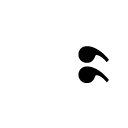
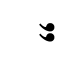

| 凍える月 おいしいコーヒーのいれ方 Second Season IV | |
| 村山由佳 | |
| (2011) | |
集英社ｅ文庫
凍える月
おいしいコーヒーのいれ方 Second Season IV
村山由佳
この本は縦書きでレイアウトされています。
また、ご覧になる機種により、表示の差が認められることがあります。
〈主な登場人物〉
和泉勝利
大学３年生、陸上部。年上のいとこ、かれんと付き合っているが、彼女が転職したことから遠距離恋愛に。
花村かれん
介護福祉士になるため、教師を辞めて鴨川の老人ホームで働いている。
花村 丈
姉と勝利の恋を応援する、ちょっと生意気な高校２年生。
原田政志
強面だが世話好きの、陸上部のよき先輩。
星野りつ子
大学の陸上部マネージャー。勝利に想いを寄せている。
マスター
喫茶店『風見鶏』のオーナー。かれんの兄。
〈前巻までのあらすじ〉
高校３年生になろうという春休み。父親の九州転勤と叔母夫婦のロンドン転勤のために、勝利は、いとこのかれん・丈姉弟と共同生活することに。５歳年上の彼女をいつしか愛するようになった勝利は、かれんが花村家の養女で、彼女がかつて慕っていた『風見鶏』のマスターの実の妹だという事実を知る。そんな勝利に、かれんも次第に惹かれていく。二人が恋人同士になったことを、花村の両親はまだ知らない。
大学に進学した勝利は、叔母夫婦の帰国と父親の再婚・帰京を機に、アパートで一人暮らしを始める。一方、かれんは、高校の美術教師を辞め、鴨川の老人ホームで働きながら介護福祉士を目指す。自立しようというかれんを応援しながらも、勝利の心は、離れて暮らす不安にたびたびさいなまれた。
あるとき、アパートの大家とその弟のいさかいに巻き込まれ、前歯を折ってしまう勝利。かれんは、偶然、勝利のアパートを訪れていた星野と鉢合わせしてしまう......。
おいしいコーヒーのいれ方 Second Season IV
凍える月
Eternal Flame
１
「だいたい決めた？」
「いや、まだ全っ然」
「あたしもまだー」
「できれば都内から動きたくねえなあ」
「けど大企業系だとぜったい転勤とかあるでしょ」
「やっぱ山手線の内側がいいな」
「東横線の沿線とかもよくね？」
「俺は大きい会社じゃなくていいや。六本木あたりのビルとかに入ってる、中くらいのＩＴ系とかがいいな」
「えー、やばくね？ すぐ潰れンぜ？」
「いいよ、その時はその時で。とりあえず仕事さえ面白けりゃ」
「まあ、大きいとこだって今どきは何が起こるかわかんないしね」
「三崎くんはさ、やっぱりテレビ狙ってんの？」
「うーん、一応」
「あたし飲食系もいいなあ。働くの、けっこう楽しそう」
「あ、わかるわかるー」
喫茶店『風見鶏』の奥まったコーナー席。
見たことのない学生たちが陣取って、コーヒー一杯で長居している。
男が三人、女が二人。おそらくみんな三年生なんだろう、話題はさっきから就職活動のことばかりだ。
女の子の片方が「このお店、落ちつけていいよねえ」と言い、もう一方が「ほんとほんとー」と同意する。嬉しい意見だが、二人とも声がやたらとでかい。
「おかげでまわりは落ちつかないっての」隣から丈のやつが僕にささやく。「そう思わねえ？」
苦笑いで答えておいて、僕はマスターの淹れてくれたコーヒーを口に運んだ。
カウンターの隅っこの席だった。『風見鶏』に来ると、僕は必ずと言っていいほどここに座る。ここからだと、店の中全体と、カウンター内のキッチンの両方がよく見渡せるからだ。
マスターは今、手前のテーブルにいるお客のオーダーに応じて、二人ぶんのピザトーストを作っている。同時にマンダリンと、キリマンジャロも。
無駄なく動くマスターの手もとを眺めているだけで、僕は人生に必要なことの多くを学べるような気がする。大げさに言っているわけではなくて、ほんとうにそのままの意味だ。
たとえば、限られた時間を有効に使う方法、とか。
物ごとに対する優先順位のつけ方、とか。
とっさの判断。手際の良さ。そして、自分の仕事に対する厳しいほどの誠実さ......。そういうことのすべてをもっと近くで直に学べていたはずのあの場所を、どうして僕はみすみす失ってしまったんだろう。
与えられた仕事に集中できなかったのだから自業自得なんだってことくらいわかっているし、マスターはこれを機会にもっと広い世界を見ろと言ってくれたけれど――今でもやっぱり、悔しい。気のせいか、僕の身のまわりにショボいことばかり起こるようになったのも、思えば『風見鶏』のバイトを離れて以降のような気がする。
奥の席の連中が、ひときわ大きな声で笑いだした。コーヒーで酔っぱらったのかと思うほどの馬鹿笑いだった。もう二組いる他のテーブルのお客たちが、それぞれの会話を中断し、黙ってそっちを見やる。
よっぽど立っていって注意しようかと思った。客はおたくらばかりではないのだから、まわりのこともちょっと考えてほしい、と。でも、差し出がましいことかもしれない。僕はもうこの店のスタッフじゃない。いつだって大入り満員とは言えないこの店にとって、あの学生たちだって大事なお客であるには違いないんだし......。
――と、マスターがトレイを片手にのせてこちら側へ出てきた。手前のテーブル客の前に、それぞれピザトーストの黒い皿とカップを一つずつ丁寧に置き、低い声で、めずらしくこう言った。
「いつもありがとうございます。どうぞごゆっくり」
それから、カウンターの端に置いてあったピッチャーを取ると、まだ盛りあがっている奥の席へ近づいていき、テーブルのそばに立った。空いたグラスに水を注ぎ足すでもなく、彼らを黙って見おろす。
時間にして、ものの十秒ほど。
学生たちが、一人また一人と話をやめて目をあげる。
全員の顔が自分に向けられるのを待ち、シンとなった中で彼らの視線を充分に受けとめてから、マスターはおもむろにピッチャーを傾け、順ぐりに水を注いだ。ことさらにゆっくりとしたその所作を見守る学生たちの顔が、それぞれ戸惑いに揺れ、気まずさにこわばっている。
五つのグラスに水を注ぎ終えると、マスターは言った。
「――わかっていただけたなら、ごゆっくり」
こちらのテーブル客に対するのとまったく同じ、低くて穏やかな声だった。
戻ってきたマスターがキッチンへ入り、清水器からピッチャーに水を汲み足し、カウンターにふきんを敷いてそれを置く。
すべてが、定位置。店の中の空気も、これで元どおりだった。
何ごともなかったかのように洗いものを始めたマスターを見ながら、丈が小声で言った。
「恫喝って、優しけりゃ優しいほどおっかねえのな」
「おいコラ」
とマスター。
「いやぁ、だってオレ、こないだ観た映画思いだしちゃったもんね」
「映画？」
「そう。マフィアのボスがさ、すっげぇニコニコしながら優し〜い声で言うのよ。縛りあげた男を前に、『さぁて、どの指から始めようかねえ』って」
「馬鹿、何の話だ、人聞きの悪い」
ひげの奥でマスターがわずかに苦笑する。これで客がいなければ煙草を一本吸いたいところなんだがな、という感じの薄笑いだった。
向こうの隅では、さっきよりずいぶんと静かになった学生たちがまだ話しこんでいる。あんなふうに注意されたあとすぐに席を立つというのも、かえって勇気が要るのかもしれない。
「そういえば勝利はさ」と丈が言った。「就職とか、どっち方面考えてんの？ もう決めた？」
簡単そうに訊いてくれるよ、と思いながら、
「まだ内緒」
と僕は言った。
「えー、ケチ」
「ケチってお前......」
「ほんとは全然決めてないんでしょ」
「.........」
「やっぱりね」
「ふん。どうせまた、ヒトのこと優柔不断だとか言うんだろ」
わかってるんだよ自分でも、と僕が言うと、意外なことに丈は首を横に振った。
「べつに言わないよ、そんなこと。オレだって来年や再来年のことを今から訊かれて、その先ずっと何をやって食っていくつもりかなんて言われても、そう簡単に決められるわけねーだろって思うもん」
「そりゃそうだろうけどさ。それでもみんな、どこかでちゃんと腹をくくって決めていくんだよ」
なのに僕は、まだそれができないでいる。
怖いのは、何か一つを選ぶことじゃない。そうすることによって、他の可能性をすべて捨てなくてはいけないってことだ。何も決められないでいるうちに期限が迫ってきて、やけっぱちで「腹をくくって」選ぶ進路が正しいなどとどうしてわかる？ 選んだ一つよりも、捨てた沢山の可能性の中にこそ、自分に向いた道があったとしたら？ あとから気づいて後悔しないとどうして言える？
「まあ、そう深刻に思い詰めんでもいいさ」
とマスターが言った。グラスを一つずつ洗っては、水切りトレイにそっと置く。
「期限がいずれ来るというなら、期限いっぱいのぎりぎりまで迷えばいいんだ。ろくに迷わずに決めちまって、あとからぐらつくよりずっといい」
「でもほら、こういう性格だからさ」と僕は言った。「さんざん迷って考えに考えてから決めても、やっぱりあとからぐらつきそうだし......」
「ははは、その時はその時だ。人生、どこでどう曲がるかわからん。俺だって、野球をやるはずが肩を駄目にしてサラリーマンになったし、結局はそれも辞めちまって今はこんな店をやってる。見てのとおり、儲かってるとはお世辞にも言えんだろう」
「う......」
「こら、お世辞くらい言え」
「どっちだよ」
マスターはふっと笑い、それでも、と続けた。
「それでもな。あのまま野球の世界に入って、たとえ年収にして数千万から稼げていたとしても、だからって今より本当の意味で幸福だったかどうかは誰にもわからないわけだ。そうだろう？」
うーん、と唸った僕の隣で、
「本当の意味での幸福って、何？」
と丈が言う。
「うん？ そりゃあまあ、あれだ」
マスターは、洗い終わったグラスを今度は順番に麻のクロスで拭きながら、いささか照れくさそうに言った。
「心から大事に想える家族がいて、その家族がこっちのことも同じくらい大事に想ってくれてる、ってことかな。少なくとも俺にとっては」
「うわはは、ごちそうさま！」
丈が笑いだした時、奥の学生たちが席を立ってぞろぞろとこっちへやってきた。五人ぶん先にまとめてから会計を済ませてくれればいいのに、一人ずつ「ブレンド」だの「カフェオレ」だのと、個別に釣りをもらっては店を出ていく。ドアが開いたり閉まったりするたびに、カランカランとカウベルが鳴る。
彼らの背中を見送り、やれやれ、大声を出さずにいてもやっぱり騒がしい連中だったな、と目を戻したと思ったら、再びカラン、とベルが鳴った。
「あの......」
半開きのドアから顔を覗かせたのは、いちばん最後に出ていったメガネの男子学生だった。
「うるさくして、すいませんでした」
と彼は言った。
「――いや」
「あと、あの、コーヒー、美味しかったです」
「そう。ありがとう」マスターは動じることなく言った。「また飲みたくなったらおいで」
「はい。次は、一人で来ます」
頭をさげて、男子学生はドアを閉めた。カラン、と小さくベルが鳴る。
マスターが僕を見て、肩をすくめた。
「ま、世の中そう捨てたもんでもないらしい」
と、そのとたんに外から女の子の声が聞こえた。やっだ、どうしちゃったのぉー？ 自分ばっかイイコぶっちゃってぇー。
「オレがもし面接官だったら」と、丈が忌々しそうに言った。「ああいう女だけは、何があっても採用しねえな」
「でも、ああいう子ほど、面接官の前ではそれこそイイコぶってみせるんじゃないか？」
「まあねえ、勝利クンなんかはコロッと騙されちゃうかもしんないけどさ。オレなら絶対に見破ってみせるね」
「どっから来るんだよ、その自信」
あきれながら、さっきまでよりいくらか機嫌のよさそうなマスターに、もう一杯ブレンドを頼む。
（世の中、そう捨てたもんでも......か）
言いたいことはよくわかるけれど、正直言って、今の僕にはあまりそう思えなかった。何しろ、ここしばらくの間に僕の身に起こったことと言ったら、その逆を思わせるようなことばかりだったのだ。
森下家の壮絶な兄弟げんか（と単純に言っていいのかどうか）に巻きこまれて折れた前歯に関しては、その後、一か月余りにわたって地道に歯医者へ通うことでようやくちゃんとした差し歯が入った。二か月たった今では人前で普通に笑うこともできるし、顔面を色とりどりに染めていた醜い痣も消えた。治ったら前より男前になっていた、なんて幸運には恵まれなかったけれど、とりあえず元どおりの僕には戻れたわけだ。
でも――森下の家は、もうおそらく、元には戻らない。
あの兄弟の間柄がこの先どうなっていくのか、あるいは、そう、裕恵さんがいつか旦那さんよりも弟の秀人さんのほうを選ぶ日が来るのかどうか......。そんなのは部外者の僕なんかに関係のないことだし、首を突っ込んでいいことでもないとわかっているけれど、行きがかり上とはいえあそこまで深く関わってしまったのだ、やっぱり気にはなる。
オーストラリアへ帰っていった秀人さんからは、しばらくして僕宛てに手紙が来た。あらためて前歯と怪我についての丁寧な謝罪があり、そのあとに、僕の部屋で長々と話した内容に関しては、どうか気にしないでほしいと書かれていた。ただ、一度でいいから誰かに洗いざらい打ち明けてしまいたかったのだ、と。勝手にその相手に選んでしまって非常に申し訳なかった、どうか許してほしい、と。
裕恵さんにしろ、旦那の森下さんにしろ、そして秀人さんにしろ――少なくとも今この時点では誰一人として、「世の中、そう捨てたもんでもない」なんて思ってやしないだろう。
それでもみんな、歯を食いしばってでも日々の暮らしをなぞっていく。森下さんは「ウッディランド」の不動産業務に追われ、裕恵さんはその留守を預かり、秀人さんだって向こうでアボリジニの研究に戻っている。
なぜなら、三人とも〈大人〉だから。大人というのは、悲しいことがあったからといっていちいち引きこもって泣き暮らすわけにはいかないものだからだ。
僕は、かれんを想った。
同じだ。彼女もやはり、大人としての責任を負って働いているだけに、胸の内にどんなしんどい思いがあろうと仕事を投げだすことはできない。お年寄りたちの暮らしを預かっているのだからなおさらだ。
あの晩の、かれんの涙......。
思いだすと、たまらなくなる。
「マスター」
「うん？」
「その後、連絡あった？ ホームから」
「――いや。ないな」
マスターはちらりと僕を見て、言った。
「お前のほうには？」
「......うん。何も」
「そうか。まあ、あいつが何も言ってこないってことは、とくに進展がないんだろう」
僕もそう思う。
だからこそ、心配なのだった。
＊
あの日――僕らは、いつになく長い一夜を過ごした。
かれんとは顔を合わせるの自体が久々だったし、それでなくとも彼女と過ごす夜は時間がするすると指の間からすり抜けていってしまうように感じられるのが普通なのに、あの晩に限っては、時計の針の進み方がいつもとは違っていた。
正確には、途中から変わったと言うべきかもしれない。
かれんと星野が鉢合わせするという不穏な滑り出しに加え、逢いたいのを懸命にこらえていたところへ突然彼女が来てくれたことへの驚きや喜びが全部一緒くたになって、僕は正直、ずいぶんと情けなくがっついてしまったと思う。
灯りを消し、ベッドに倒れこむのももどかしく、キスをくり返しながら彼女の服を脱がせる。かれんが――実体をともなった、手で触れることのできるかれんが、本当にいま僕の腕の中にいることを思いつく限りの方法で確かめるのにいっぱいいっぱいで、彼女のペースを思いやる余裕なんかまるで無かった。
〈ま......待って〉
と、かれんが懸命にささやく。
〈お願い、待ってショーリ、待っ......！〉
びくんっ、と跳ねて反り返る体。のけぞらせた喉が、窓から射しこむ街灯の灯りに仄白く浮きあがる。
〈だめ、ショーリ......あ、や、ショーリ、ショーリ、ショー......〉
半びらきの唇からうわごとのようにもれる懇願を、封じこめるようにわざと強く口づけると、かれんは鼻から子どもがむずかるような声をもらしてぎゅうっと僕にしがみついてきた。熱い吐息が、僕の耳もとをしっとりと湿らせる。かすれた声で名前を呼ばれるたびに、脳の血管が一本ずつ切れそうになる。
もちろん、彼女にはまるでわかっていないのだ。待ってと訴える声や仕草が、逆にどれだけ自分の身を危うくしているかってことが――そういう言葉や息づかいが切羽詰まったものであればあるほど、男はかえって駆り立てられ、どんどん我慢がきかなくなってしまうってことが、ほんとに、全然、わかっちゃいないのだ。
そんなわけで、僕はとてもじゃないけれど彼女の〈お願い〉をまともになんか聞いてやれず、最後の最後までひたすら全力で突っ走ってしまってから、我に返って平謝りすることになった。
〈......ごめんなさい〉
〈.........〉
〈すみません〉
〈.........〉
〈ちょっと調子に乗りすぎました〉
〈......ちょっと？〉
〈じゃなくて、だいぶ。いや、かなり。ってか、ほんっとごめん！〉
土下座せんばかりの勢いで謝りたおす僕を、かれんはしばらく許してくれなかった。恨めしそうに口もとをとがらせて、なかなか視線を合わせてくれないのだ。
でも僕は、ちょっとだけ思ってしまった。もしかしてかれんは、僕が彼女の〈お願い〉を聞こうとしなかったことを本気で怒ってるわけじゃないんじゃないか。それよりはむしろ、僕が彼女に対してするあれやこれやにいちいち反応してしまうようになった自分自身が恥ずかしくて、いたたまれなくて、感情のやり場が見つからずにいるんじゃないか、と。まったく的はずれで勝手な思いこみかもしれないのだけれど、なんとなくそう思ってしまったのだ。
でもそんなこと、言葉に出して確かめようものなら、エラいことになるのは目に見えている。いつかのように、またしばらくのあいだ口をきいてもらえなくなるかもしれない。同じ家で暮らしていたあの頃ならともかく、めったに逢えない今、それだけは避けたい。
まったく、勘弁してくれよなと思う。女性の口にする〈いや〉が、はたして本気の〈いや〉なのか、それともどちらかというと逆の意味なのかを正確に聞き分けるのは、男にとっては至難の業なのだ。ほとんどリビドーだけで動いている単細胞な生きものに、そんな高度な謎かけをしないでほしい。というか、言葉はもうちょっと正確に使ってほしい。
かれんを背中から抱きかかえ、鼻先を髪の中にうずめる。そのまま黙ってじっとしていたら、やがて彼女が毛布の中でもぞもぞと動いて僕の手を取り、指の節のあたりに唇を押しあてた。たぶん、仲直りの合図だった。
そっとこっちを向かせ、まだうつむきがちの彼女に口づける。さっきまでの余裕のないキスじゃなく、もっと穏やかで親密なキス。曖昧だけれど複雑で、軽やかだけれど意味深で、短くてもたくさんの想いを伝え合うことのできるキスだ。
何度か、ついばむようにそんなキスを交わし合ったあと、僕は言ってみた。
〈......もう、怒ってない？〉
かれんはちらっと上目遣いに僕を見ると、例によって鼻のあたまに憎たらしげな皺を寄せて言った。
〈まだ、すっっっごく怒ってますー〉
その口調に、僕は思わずふきだしてしまった。
〈んもう、笑い事じゃないでしょお〉
むくれる彼女を、ごめんごめん、と抱きしめる。彼女が額でぐいぐいと僕の胸を押してくる。
とたんに、たまらないほどの愛しさが胸の奥からつきあげ、危うくたった今の反省も忘れて第二ラウンドに突入してしまうところだった。
まったく、導火線が短すぎる僕が悪いのか、それとも短いとわかっていて火をつける彼女が悪いのか......。きっとどっちもだ。割合はまあ、七対三、いや八対二くらいかもしれないけれど。
互いの体に腕をまわし合ったまま少しだけ眠り、どちらからともなく目を覚ましてから、結局、二人きりで鍋をした。星野りつ子が野菜や鶏肉を全部刻んでおいてくれたので、あとはただポン酢の小鉢を用意すればいいだけだった。
かれんは特に何も訊かずにただ美味しいと言って食べたし、僕ももう、星野が一人でこの部屋にいた理由について新たに弁解はしなかった。かれんと鉢合わせするなり星野が慌てて口にした言葉――すぐあとから来るはずの原田先輩が急に来られなくなったから自分も今帰るところだった、というあの説明が、決して嘘じゃないってことは、何よりもこの野菜と肉の量で一目瞭然だろうから。
かわりに、かれんは森下家の騒動と僕の前歯についてもう少し詳しく聞きたがり、それから隣の鈴木さんや幸太のことを聞きたがった。怪我をして以来、鈴木さんによる整体はしばらく中断しているけれど、幸太は毎週のように来てここで飯を食っていく、と僕は言った。相変わらずあんまり口数は多くないけど元気だよ、と。
〈で？ そっちは？〉
〈......え〉
〈仕事、どんな感じ？〉
〈どんなって......〉
〈前にさ、ほら、聞き分けのないお年寄りにもなかなか厳しく言えなくて、小林さんに注意されたとかって言ってたろ。そのあたりのことはどうしてるのかなって、あれから時々思ってた〉
〈ありがと。それは、うん、何とか頑張ってる〉
テーブルの上を一緒に片づけたあと、焙じ茶を淹れてくれたかれんが、湯呑みを僕の前に置く。サンキュ、と僕は言った。
〈考えてみたら、ホームへもしばらく行ってないなあ。おばあちゃん、元気でやってる？ 小林さんも〉
〈......ん〉
伏し目がちになったかれんを見て、僕は慌てた。
〈うそ、何。まさか、おばあちゃん具合悪いのか？〉
〈あ、ううん、違うの。そうじゃないの〉
かれんがかぶりをふる。
〈じゃあ、どした？ なんかあった？〉
〈.........〉
彼女はしばらく答えなかった。ただ自分の湯呑みをてのひらで包むようにして、その中へと視線を落としていた。まるでその小さな水底に答えが映し出されるのを待っているかのような、長くて重たい沈黙だった。
いや、もしかすると実際にはそんなに長くなかったのかもしれない。時間の流れ方が変わったのは、このあたりからだった気がする。
〈じつはね〉
と、彼女はようやく言った。
〈私......〉
〈うん〉
〈まだ、はっきりとはわからないんだけど......〉
〈うん〉
〈もしかすると、ホームを辞めなくちゃいけないかもしれなくて〉
〈うん......ええ!?〉
驚く僕を見て、かれんはうっすらと微笑んで頷いた。当たり前だが、とても悲しげな微笑だった。
〈びっくり、した？〉
〈そりゃあ......〉
はっと気づいて言った。
〈もしかして、前に相談したいことがあるって言ってたのはそのこと？〉
かれんが頷く。
〈でも、あれからもうけっこうたつじゃないかよ〉
〈そうね〉
〈そんな前からずっと悩んでたわけ？ っていうか、そもそもなんでお前が辞めなくちゃなんないわけ？〉
かれんが、再び湯呑みの中に目を落とす。
〈もしかして......なんか大きな失敗でもしちゃったのか？〉
彼女が首を横に振る。
〈ショーリは、園長先生とは話したことあったっけ〉
あるよ、と僕は言った。かれんが鴨川へ行ってからわりと間のない頃だったと思うけれど、一度挨拶したことがある。
穏やかな、でも何でも見通してしまいそうな深い目をしたおじいさんだった。たしか、最初にかれんを面接して、ぜひにと誘ってくれたのもあの園長先生だ。かれんが鴨川へ行きたいと言いだして、佐恵子おばさんが何もそんな遠いところじゃなくてもと反対した時も、かれんは、実のおばあちゃんがいるからだけじゃなく、あの園長先生のもとで働きたいからこそ鴨川のホームを選んだのだと言って必死に説得しようとした。それくらい、あの先生の経営方針には心酔していたのだ。
〈倒れちゃったの〉
ふいに、かれんが言った。
〈え？〉
ひとつ短く深呼吸して、かれんはくり返した。
〈園長先生がね。倒れてしまわれたの。脳梗塞で〉
〈......マジかよ〉
彼女がこっくり頷く。
〈幸い、命はとりとめたけど、体と言葉に麻痺が残ってしまって。今は、ほとんど寝たきりでね。私も時々、病院へお見舞いには行ってるんだけど〉
〈じゃあ......ホームの経営とかは〉
〈もう、お歳もお歳だからって引退なさることになって〉
〈跡は、誰が継いだわけ〉
〈副園長だった息子さん。っていうか娘さんの旦那さんだから、正確には義理の息子なんだけど......〉
言いよどむかれんの顔をじっと見つめて、僕は言った。
〈――そいつに辞めろって言われたのか〉
〈辞めろ、とまでは......〉
〈でもつまり、そういう意味のことをさ〉
かれんは、少しためらってから、頷いた。
〈これまでの経営があまりにも穴だらけだから自分が切りつめなくちゃならないんだ、って言って、お義父さんのやり方をすごくけなすの。でも、このままだとホームは倒産するのが目に見えてて、そうなったら入所してる人たちも行き場を失うことになるんだって言われたら、何も言い返せないし......実際、私なんかは働きながら勉強させてもらってる立場で、資格も持ってないし〉
〈資格がない人間から切ろうってか〉
かれんが、黙ってうつむく。
すでに、泣きだしそうな顔をしていた。
僕は、まだ一度も会ったことのない副園長に対して激しい憤りと苛立ちを覚えた。
あの園長先生の娘婿というと、たぶん五十代くらいだろうか。何となく、痩せぎすメガネのいけすかないオヤジを思い浮かべる。それともでっぷり太ったハゲオヤジか。いずれにしろ、ごうつくばりの悪者顔にちがいない。
と、そんなふうに思っていた僕にとって、続くかれんの言葉は意外なものだった。
〈でもね。副園長の言ってることは、けして間違いってわけじゃないの〉
〈え？〉
〈だって、これから先、あのホームに何かが起こった時に......もちろん何も起こらないにこしたことはないんだけど、どうしても現状を変えなくちゃいけないような事態に陥った時に、真っ先に考えなきゃいけないのは、どうやったら入居者の人たちを守れるかっていうことでしょう？〉
〈そりゃ、そうだけど......〉
〈スタッフならまだ、職場を変わることもできる。働ける年なんだし、体だってきくんだもの。中でも私なんて一番ペーペーで何の資格もないんだから、辞めさせられるとしたら最初に言われて当たり前よ〉
〈うーん......〉
〈でも、入居者のお年寄りたちは事情が違う。はるかに深刻なの。ほとんどはあのホームで残りの一生を過ごすと心に決めて、退職金とか家や土地を売ったお金をつぎこんで移ってみえた人たちなんだから。おばあちゃんだってそうよ。マスターが、育ててくれた人の遺した財産をほとんどその費用に充てて、面倒見てもらうことにしたはずなの。それなのに、これで万一ホームがほんとに倒産しちゃったら、最初に払い込んだ入所一時金なんかたぶんろくに戻ってこないし、〉
〈え？ そういうのって、どっかから補助金とか出ないわけ？〉
かれんは、黙って首を横にふった。
〈だって......じゃあ、そうなったら入居してたお年寄りはどうなっちゃうんだよ〉
〈それなのよ。特養とかと違って、うちみたいに私企業の経営だと、倒産しても政府から助けの手がさしのべられるわけじゃないの。だから、ほんとにたちまち困るわけ。急に住むところがなくなったからって、身を寄せる家がある人たちばかりじゃないし......ほんとに路頭に迷っちゃうの〉
〈嘘だろ......〉
僕は、何度か訪れたホームを思い浮かべた。
かれんのことを「お花ちゃん」と呼んで、孫みたいに可愛がってくれていた人たち。車椅子を押してもらいながら、芝生の庭で楽しそうに談笑していた人たち。そしてその外に広がる、海まで続く松林......。
〈あの人たちを、そんな目に遭わせるわけには絶対にいかないもの〉
いつもとは別人みたいな暗い声で、かれんは言った。
〈副園長は今、そういう最悪の事態を避けるために、苦しい決断をいっぱいしてくれてる。正直言って、園長先生みたいには好きになれない人だけど、少なくともそれがどれほど大変な作業かってことだけは私にもよくわかるの〉
ふっと息をついて、かれんは畳に目を落とした。
〈副園長の、何かにつけてお義父さんをけなすみたいな言い方は聞いててイヤだけど......でも、あの園長先生は、たしかに経営者としては人が好すぎたのかもしれない〉
〈って、たとえば？〉
〈たとえば......古株の入居者の中には、月々の支払いが滞ってしまう人もけっこういたみたいでね。だけど、他に行くあてもないのに出てってもらうには忍びないからって、払えるようになるまで待ってあげてたりしたらしいの。それも、副園長とかに知られたらうるさく言われるからって、経理を担当してた奥さんにも口止めして、こっそり内緒でね〉
ふうむ、と唸った僕をちらりと見て、かれんが寂しい苦笑いを浮かべた。
〈わかるでしょ？ 誰だって、ちょっと考えればわかることなのよ。元気に働ける人ならともかく、介護が必要なお年寄りが、いま払えないお金をいつか先で払えるようになるわけないじゃない？ いくら善意で気長に待ってあげたって、無理なものは無理にきまってるじゃない〉
言いながら、かれんの眉根に悲痛なしわが寄っていく。
〈私......ほんとうに、あの園長先生のこと尊敬してる。今だって大好きよ。あのひとが私のおじいちゃんだったらどんなに素敵だろうって思うくらい。だけど、こうして実務面のいろんなほころびが表面に出てくるとね、いったいどうして、って思うの。どうして、もうちょっと何とかできなかったんだろうって〉
僕は黙っていた。
〈そりゃ、古くからいる人たちを追い出すなんてことできなかった気持ちはわかる。私がもし園長先生の立場だったら、やっぱりできなかったかもしれない。ううん、きっとできなかったと思うわよ。でも私なんかは、もともとそういうことができる人間じゃないって自分でわかってるからこそ、最初から園長先生みたいなポジションには立たずに、その下で働く生き方のほうを選んでるわけでしょ。園長先生も、それができないなら、ホームの経営なんて始めたりするべきじゃなかったのよ。介護事業っていうとついボランティア感覚で扱われがちだけど、事業と名がつくからには、理想や理念だけで経営できるものじゃない。そのことは、いやでも認めないわけにいかないんだもの。そうでしょう？〉
そこまで一気に話しきったかれんが、ようやく息をつく。
〈そうだな〉
と、僕は低く言った。
〈結局......〉
かれんがつぶやく。
〈園長先生の持ってる、人としての温かさとか優しさは、もしかして、企業経営っていう一点においてはかえって邪魔なものだったのかなあ、とかね......。誰に対しても厳しくできなかった園長先生の性格が、結果的に、入居者の人たちみんなを危険にさらすほうへ働いてしまったってことなのかなあ、とかね......。そういうふうに思ったら私......やり......やりきれなく、なっちゃって......〉
見ると、かれんはいつのまにか、唇をふるわせてぽろぽろ泣いているのだった。涙のしずくが、あごの先から膝の上に落ちる。
僕は、手を伸ばして彼女を抱き寄せた。僕の胸に額をくっつけて泣き続ける彼女の、背中をそっとさすってやる。
そうする以外に、何もできることなんかなかった。何も言えなかったし、言っても意味がない気がした。いま話を聞かされたばかりの僕がとっさに言える程度の慰めなんて、渦中にいる彼女の痛みに届くわけがない。
そうして彼女の背中を撫でながら、僕は考えていた。あの園長先生は、いったいどこで間違えてしまったんだろう、と。部活バカでまともに授業なんか出ていないにせよ、これでも一応、経済学部に属してはいるのだ。
経営に理想や理念はたしかに大切だけれど、かれんの言うとおり、時に厳しい決断を下すことも、トップに立つ者としての責任のひとつであるはずなのだ。いや、もしかしたらいちばん重要な役目かもしれない。
悲しいことだけれど、すべての人に優しく広い心で接していたら、営利企業は立ちゆかない。経営する側と利用する側との間には、最初に決められた厳密なルールがあって、それを守っている人と守らない人を同じように扱うのは不公平だし、規律が乱れるし、ひいては大きな損失を招いてしまう。企業経営は、残念ながらボランティアとは違う。というか、経営が成功していて初めて、園長先生が理想としたボランティア精神を実行に移すだけの余裕も手に入るはずなのだ。これは決して、弱い者は切り捨てて当たり前だと言ってるんじゃない。切り捨てられる側の痛みを我がことのように感じたとしても、それでもなお決断を下さなくちゃならない場面はある、ということだ。もしその決断ができないのなら、そう、最初から上に立つべきではないのだろう。
〈なあ〉
彼女の涙がいくらか落ちつくのを待って、僕は言った。
〈......ん〉
〈正直なとこさ......。どれくらい、ヤバそうなの？〉
〈わかんない〉
かれんは、うつむいたままゆっくりと首を横に振った。
〈副園長は、倒産だけは全力で回避するって言ってるけど......〉
そして、洟をすすりながら顔をあげ、濡れた頬をてのひらでぬぐい、ごめんね、と無理に微笑もうとした。
〈何が？〉
〈取り乱したりして。私がいくら泣いたって、どうにもならないのに〉
〈べつに、泣けばどうにかなると思って泣いてるなんて思ってないよ〉
〈......どういう意味？〉
〈だからさ。泣きたい時は、無理しないで泣けばいいってこと。ふだん、職場とかじゃ泣けないんだから、俺の前でぐらい我慢することないって〉
かれんの唇がみるみる「へ」の字にゆがんで、ひくひくっと痙攣する。
でも、かろうじて元に戻った。口から熱い息を吐いて、涙をこらえきる。
〈そ......そんなふうに、甘やかしちゃ駄目だってば〉
〈なんで〉
〈だって......こうやって何とか突っ張ってないと、気持ちが折れちゃう〉
〈うーん、それはどうだろう〉
〈どうって？〉
〈だってお前、俺に電話で相談したいことがあるって言ってから今まで、もうずーっと我慢し続けてきたわけだろ？ 折れないように、気持ちを棒みたいに突っ張ってさ〉
〈.........〉
〈けど、あんまり硬い棒ってのもかえって折れやすいもんなんじゃないの？〉
〈それは、そう......かもしれないけど〉
〈なあ、覚えてる？ 俺らが、初めて一緒に鴨川へ行った時のこと。一緒にっていうかまあ、あの時は俺が勝手にお前のあとつけたんだけど〉
かれんが、怪訝な顔で、でも頷く。
〈あの時お前、海辺でどうしたよ？ 自分から、お願いがあるなんて前置きしてさ〉
〈.........〉
〈俺にしがみついて泣いたろ、思いきり。よくもまあこんだけ泣けるよってくらいの勢いで、子どもみたいにわんわん泣いたじゃんか〉
〈そ......〉
〈そんなこと忘れたなんて、まさか言わないよな？〉
う、とかれんが詰まる。
僕は、彼女の髪を耳にかけてやった。
〈お前が、それまでよりちょっと元気になったのって、あの時からだった気がするんだけど。だからやっぱり、たまにはさ。ガス抜きも必要なんだよ〉
〈.........〉
〈そりゃたしかに、そうとう泣き虫には違いないけど、だからってべつに、泣くから弱いってことにはならないんじゃないかと思うんだ〉
〈そう、かな......〉
〈むしろ俺、お前のこと見てると逆のこと思うもん〉
〈逆？〉
〈つまり――ああ、女のひとって、こうやって泣くたびにちょっとずつ強くなってくんだなあ、って......。これじゃあ、男は絶対かないっこねえよなあって感じでさ〉
かれんが、下唇をかみしめて、上目遣いに僕を見る。小鼻のところがぴくっとする。まだ我慢しているのだ。ったく、頑固なやつだ。
ああ、どうしてくれよう――こいつへの、この愛しさを。
自分でもどうしようもなくなって、僕は、彼女の頭の上に手を置いた。くしゃくしゃとかき乱すように撫でる。
〈......また〉
〈なに〉
〈また子ども扱い〉
違うよ、と苦笑して首を振る。
〈だって俺、お前のこと尊敬してるもん〉
〈え......？〉
〈うん。ほんとに、すごく尊敬してるし、誇りにも思ってる〉
〈.........〉
〈お前が一人で鴨川行くって言いだした時は、正直、ここまでやれるとは思ってなかった。ごめんな。ちょっと、甘く見てた。でも今は、あの時、俺のエゴで引き留めたりしなくてよかったってつくづく思うよ。だって今のお前、ほんとに頑張ってるもんな。めちゃくちゃ頑張ってるもんな〉
かれんの喉が、こくん、と何かを飲み下す。瞳は、ゆらゆら揺れながらも僕を見つめたままだ。
〈ショーリ......〉
〈うん？〉
〈ショー......リ......〉
突然、かれんの口もとが、ふぇ、とゆがんだ。続いて、びっくりするくらい大量の涙がぼろぼろぼろっとこぼれ落ちる。
震える指で僕のシャツの裾をつかみ、さっきまで以上の激しさで、ダムが決壊したみたいに肩を揺らして泣きじゃくる彼女を、僕はそっと抱き寄せ、抱きしめた。
こんなにもいっぱいいっぱいまで我慢していたのかと思うと、僕まで胸が痛んで泣きたくなる。
ふだんからもっとそばにいられたら、いくらだってこんなふうに抱きしめて、少しずつでも楽にしてやれるのに――いつかかれんが僕に言ってくれたみたいに、彼女にとっての絆創膏になるような言葉をたくさん言ってやれるのに。
泣くのをこらえすぎて真っ赤になってしまった耳たぶに、僕はそっとキスをした。かれんが、ぴくっと震える。
〈こんなこと、年下の俺が言うのも変かもしれないけどさ〉
と、ささやく。
〈ほんとにお前、鴨川行ってから、ものすごくしっかりしたよな〉
憤慨するかなと思ったのに、かれんは洟をすすりあげて言った。
〈ほ......ほん、とに、そう思う？〉
〈うん。マジでそう思うよ。ひとりで暮らして、人と関わる仕事を任されて、ちゃんと責任を負って頑張り続けるっていうのは、それだけ大きな意味のあることなんだな〉
彼女が、ううーっとくぐもった声をもらす。
〈だからさ〉
頭をよしよしと撫でながら、僕は言葉を継いだ。
〈この先、もしもあのホームを辞めなくちゃならなくなったとしてもさ。お前にとっては絶対、なんにも、無駄にはなんないよ。――絶対に〉
＊
いくらそんなことを言われたところで、かれんにとっては何の慰めにもならないだろうし、ましてや助言になんかならないだろう。
わかっていても、あのときの僕には、せいぜいそれくらいしかかけてやれる言葉がなかったのだ。
そうして、あれから一か月あまり。僕の顔から痣が消え、折れた前歯の代わりが入るのを待つうちに、いつのまにか冬は去っていて、あたりはずいぶんと春めいていた。
でも――さっきマスターにも言ったとおり、かれんからホームについての新しい報告はまだない。花村のおじさんや佐恵子おばさんには、心配をかけるから何も言わないでほしい、というのが彼女の頼みだったから、僕も丈もこのことについては『風見鶏』でしか話さないようにしている。
もちろん、かれんとの間に、電話やメールなどのやりとりは普通にあったけれど、僕からはあえてその一件に触れなかったし、彼女のほうも何も言わなかった。
ほんとうに進展がないんだろうか。それとも、いざ話せばどうしても暗い話になってしまうから話さないでいるだけなんだろうか。
そう思ったら、心配でたまらなかった。ひとりで頑張っている限り、かれんのやつはきっと、どんなに苦しくても泣けないのだ。
２
このところ、まるで不幸のデパートみたいだった僕にだって、ものごとが何でもかんでもうまく運ぶ時というのがまったく無かったわけじゃない。
去年の今ごろだったか、明子姉ちゃんが半分冗談でくれた宝くじ一枚を財布の奥からひょっこり見つけ、どうせハズレにきまっていると思いながら一応調べたらなんと三千円当たっていて、こういうあぶく銭はあぶく銭らしくぱぁっと無駄遣いするのが正しかろうと珍しくパチンコなどしてみたら、三千円があっというまに三万円にもなってびっくりした、なんてことだってあった。
何でもかんでもうまく運ぶ時、の例をあげようとしてせいぜいその程度しか思いつかないというあたりがそもそも情けないのだけれど（おまけに去年の話だし）――要するに、誰しも運に恵まれる時はあるし、そういう時はとくに苦労なんかしなくてもラッキーなほうへほうへと転がっていく、ということを言いたいわけだ。
でも、それとは逆に、どんなに苦労して抗っても、何ひとつうまく運ばない時というのもある。
そういうところに一旦はまり込むと、なかなか容易には抜け出せない。トンネルの出口は見えず、すべての努力がむなしく思え、気分は鬱々と底値を這い続ける。そして、それまで築いてきたはずの自信はもろくも崩れ去る。ちょうど砂の城が波にさらわれるみたいに。
僕にとっては、あのスランプの時期がまさにそうだった。
あれは、長かった。長くて、ほんとに辛かった。自分の不調が部全体の足を引っ張っていることがわかるだけに、まわりに向かって苦しい苦しいと言うわけにもいかず、口に出せないものだからストレスが内にこもってなおさらしんどかった。
今のかれんと、かれんを取り巻く数々の問題も、まさにそんなふうな負のスパイラルのただなかにあるんじゃないか――そこから逃れたいともがけばもがくほど、からみついた縄がほどけなくなるばかりか、かえってきつく締まっていくばかりなんじゃないか。
そう思うと僕は、気が気じゃなかった。
今回のことは、どう頑張っても僕にはどうにもしてやれない。どんなに気を揉んだところで部外者の手の届く問題じゃないし、僕なんかがしゃしゃり出ていって、たとえば副園長に直談判などしたところで事態がどう変わるわけでもない。そんなガキの決闘みたいな真似をすれば、むしろ、かれんの立場を悪くしてしまうだけだろう。
このホームで働く、と彼女が自分の意志で決めた場所で起こったことだ。これからどうなるにせよ、その結果はきっと、彼女自身が引き受け、受け入れなくてはならないことなのだ。
僕にできるのはせいぜい、こうして離れたところからでも見守って、かれんが心の支えを必要とした時にさっと手をさしのべてやることくらいしかない。そんなことしかできないのかと思うと悔しいし気は急くけれど、それ以上の手出しや口出しはきっと、よけいなお世話......というより、自分の力を恃みに精一杯やっている彼女の思いや努力をないがしろにすることになってしまうんじゃないだろうか。
ふと、丈と三人、一つ屋根の下で暮らしていた頃を思いだす。
あの頃は、いっぱしにいろんなことで悩んでいたつもりだったけれど、今から思えば本当にのんきだった。僕も、かれんも、基本的に自分たちのことだけ考えていられた。星野りつ子とか中沢さんといった人たちのもたらす〈悩み〉でさえ、結局は僕とかれんの間の問題であって、それによって社会的な意味で誰かに迷惑をかけるとか、誰かに対して大人の立場で責任を取らなくちゃならないとか、そういうところにまで問題が波及していくことはまずなかったのだ。
この先、かれんだけでなく僕までが社会に出ていけば、二人の間のすれ違いはますます広がっていくのかもしれない。どちらもがそれぞれに、自分の仕事への責任をきっちり取らなくちゃいけなくなって、持てる時間のほとんどをそのために吸い取られ、そうそう相手のことを最優先に考えるわけにいかない場面も増えていくのかもしれない。
そうなってもなお、僕らが強い絆でつながり続けるためには、お互いに何をすればいいんだろう。いったい何に気をつければ、二人の間が不安定になったり危うくなったりせずにいられるんだろう。
そもそも社会人になった経験のない僕には、まるきり見当もつかないのだった。
＊
「あー、なんかお前、暗いなあ。暗い暗い。そういう暗いツラばっかしてっと、不幸が向こうからウハウハ寄ってくんぞ」
隣に座った原田先輩が、露骨に顔をしかめて言った。部活のあと、駅まで歩く途中で、晩飯を食いに寄った時だ。
「え、そんな暗いっすか？ そうかなあ」
首をかしげた僕の向かいで、星野りつ子がうんうんと頷く。
「そうだよ。ここんとこ、なんか冴えないよ和泉くん」
「うーん」
「元気出してよ。いくら和泉くんが落ち込んだところで、かれんさんの問題が解決するわけじゃないんだからさ」
「それはまあ、そうなんだけど......ってか、自分じゃべつに落ち込んでるつもりもないんだけど」
「じゃあ、なんでそんなつまんない顔してんのよ」
「悪かったな、この顔はもとからだよ」
星野がぷっとふきだす。
原田先輩と星野には、鴨川のホームを巡って起きている問題について、ざっくりとだが話してあった。星野は僕の部屋でかれんと鉢合わせしてしまったことをえらく気にしていたし、先輩も自分だけ帰ってしまったりしたからそういうことになったのだと言ってしきりに謝るしで、僕としてはこう、二人の気持ちをそこからそらすためにも、かれんから受けた相談の内容をちょっとばかり話さないわけにはいかない感じだったのだ。
「そりゃ、ホームがほんとにつぶれるのは困るだろうけど」と星野。「でもほら、あれじゃないの？ 和泉くんとしては正直なとこ、かれんさんが辞めてこっちへ帰ってきてくれるほうが嬉しいんじゃないの？」
「いや、そんなに簡単な話でも......」
「だって、かれんさんにしたって、経営者も経営方針も変わっちゃったんなら、そのホームにこだわる必要はべつにないわけでしょ？ 無理に頑張ったりしないで早く帰ってくればいいのに」
グラタンのマカロニをつつきながら星野が言うと、
「だよなあ。働ける場所は東京にだっていっぱいあるだろうしよ」
と原田先輩も言う。
二人とも、ホームにいるおばあちゃんのことは知らないのだから、そう思うのも無理はない。
生返事をしていたら、星野はフォークを置いて、顎をツンと上げた。
「和泉くんもさ、そんなに気になるんなら土日にでもパパッと行って逢ってくればいいじゃない」
「まあ、いつもならたぶんそうしてるとこだけど、こんな時だしさ。それに向こうは土日とか関係なく仕事だし」
「だからって必ずしも夜勤てわけじゃないでしょ？ だったら夜ぐらいは一緒にいられるんじゃないの？」
びっくりして、思わず星野の顔を見てしまった。
よりによって星野が、かれんとのことで僕に発破をかけてくれるだなんて思いもしなかったのだ。
「何よ」
「あ、や、べつに......」
「和泉くんのことだからどうせ、『いま行ったって自分がしてやれることは何もないんだから』とかなんとかグズグズ思い悩んでるんだろうけど、」
ぐっと詰まった僕を見て、星野はあきれ顔で続けた。
「たとえなんにも話さなくたって、好きな人にただそばにいてもらうだけで気持ちが安定するってこと、女にはあるんだよ？」
「......うん」
「っていうかさ、男だって同じなんじゃないの？ 和泉くんだって、すっごくしんどくて辛い時、かれんさんがそばにいてくれたらなあって思うことあるでしょ。べつに悩みを聞いて欲しいとか、具体的な相談に乗って欲しいとかじゃなくて、ただ近くにいてくれるだけで元気が出るのになあって」
「う......まあ、たしかに」
「それと同じだよ。なんにも難しく考えることないじゃない」
そっか。そうかもな、と僕は言った。
「そうだよ。悩んでるくらいだったら、とっとと行っちゃえ、行っちゃえ」
最後の部分は茶化すように言って、星野はカップを手に取り、コンソメスープをひとくち飲んだ。
と、その目が僕の隣に向けられ、いきなり怪訝な表情になる。なんだろうと隣を見ると、ネアンデルタールが分厚い唇を真一文字に結び、ほとんど目に涙をためんばかりの面持ちで星野をまじまじ見つめていた。
「――何ですか？」
気味悪げに眉を寄せる彼女に、
「星野よ、おまえ......」
先輩は、涙を飲みくだすかのように喉仏を上下させて言った。
「おまえ......大人になったなあ」
そうですか、と星野が冷たく言い放つ。
「だとしたら、先輩のおかげじゃないですか？」
「おっ。そうか？ そう思ってくれるか！」
「ええ。やっぱり、反面教師って大事ですよね」
「.........」
秒殺、だった。
さっきとは別の意味で涙目になってしまった原人の肩を抱き寄せて慰めてやりたいくらいだったが、もちろん実行に移すのは遠慮して、かわりに僕は言った。
「それはそうと先輩」
「......んあ？」
「若菜ちゃん、どうしてますか」
弛緩していた表情が、あっというまに真顔に戻る。それなんだわ、と先輩は言った。
「和泉、お前、何か聞いてないか？」
「何かって？」
「あれから、お前に相談とかしてこないか、あいつ」
「いや、全然」と僕は言った。「だいたい、相談のひとつもしてくれたら、先輩にこんなこと訊くわけないじゃないですか」
「そうか。そうだよな」
「家庭教師だってあれからずっと行ってないままだし」
「うん......」
例の前歯の一件があって、そのとき休ませてもらったのは僕のほうだったが、それから後――そう、原田先輩がうちに来られなくなって星野とかれんが鉢合わせしたあの日の翌週から、こんどは若菜ちゃんのほうが休みたいと言ってきたのだった。連絡してきたお母さんは、本人がどうしても理由を話してくれないのだけれど、先生に原因がないことだけは確かですからと言って、電話口で何度も謝ってくれた。
たしかに、家庭教師が休みとなればそのぶんのバイト代は入ってこないわけで、困ると言えば困る。でも、気になるのはそんなことよりもむしろ、あとから先輩に聞かされた若菜ちゃんの様子のほうだった。
彼女はあの日、なんと頭の左側の髪をひと束、根元からハサミでざっくり切られた状態で帰ってきたのだった。それを見たお母さんがひどく取り乱し、先輩に〈要領を得ない〉電話をかけてきたわけだ。無理もない。
いったい誰にそんなことをされたのか。当の若菜ちゃんにどれだけ訊いても、彼女は頑として口を割らず、それ以来、家庭教師だけじゃなく学校まで休んでいるという。切られたあとを見せたくないのだろう、家の中でも帽子を深くかぶったまま、絶対に脱ごうとしないのだそうだ。
「だから俺もおふくろも、あいつの切られた髪見たの、最初の一回だけなんだわ」
と、原田先輩は言った。
「かわいそうによう。あれだけおしゃべりで食いしん坊の若菜が、黙って部屋にこもりがちで、いまいち食欲もねえんだってよ。けど、いくら心配だからって、俺が毎日毎日通いつめるのも、かえってどうかと思うしよ」
そうですね、とつぶやいたのは星野だ。
「それはどっちかっていうと逆効果じゃないかと思う」
「だろ？ だから、あいつが何も言いたくないならしばらくそっとしといてやれって、おふくろにも言ってんだけど......何せほら、コトがコトじゃん。ハサミとはいえ、女の子に刃物じゃん。おふくろにしてみりゃ気が気じゃなくて、とうてい黙ってなんかいられねえみたいでさ。誰にやられた、誰にやられたってせっついてばっかなもんで、若菜のやつ、ますます部屋から出てこなくなっちまったんだと」
うーん、と星野が眉を寄せる。
「なんで言わないんだろう。誰かによっぽど脅されてるんスかね」
と、僕は言ってみた。
「それか、誰かをかばってるかだな」
と先輩。
「かばう？ 自分の髪ちょん切ったような相手を、わざわざかばいますかね」
「わかんねえけどさ。可能性を言ったまでだよ。あいつ、誰に似たんだかほんとに頑固でよ、相手が男なのか女なのか、学校の誰かなのか帰り道で会った程度の奴なのか、それすらもまったく教えてくれやしねえ」
でも先輩、と僕は言った。
「軽々しくこんなこと言っちゃ何ですけど、同じハサミでも、刺されたとかじゃないだけまだよかったじゃないですか。髪だってそりゃかわいそうだけど、いきなり腹とか刺されるのに比べりゃはるかにマシっていうか、不幸中の幸いっていうか」
「や、それ俺も思ったよ、マジで。まるっきりおんなじこと考えちまってさ、想像したらぞっとして、それこそ命が縮んだぜ」
原田先輩が苛立たしげなため息をつき、グラスの水をあおった時だ。
星野がふと言った。
「先輩」
「うん？」
「私、今日これから行って、若菜ちゃんと会ってみちゃ駄目ですか」
「へ？」
原田先輩がきょとんとする。
「駄目ってことはねえけどさ、会ってどうすんだよ」
「わかんないですけど、ちょっと話してみたくて。でもどうなんだろ、こういう時に初めての人間がお宅へ伺ったりするのって、あんまりよくないのかな」
先輩は、唸った。
「や、大丈夫じゃねえかな。俺が、和泉と一緒にぶらっと連れてく形なら」
「えっ、俺も行くんですか!?」
びっくりして僕は言った。しかも、今日これから？
「文句あんのかよ」
「いや、べつに無いですけど......」
無いけど、なんで勝手に決めるかな、と思っただけだ。
「――あ。でも、待てよ？」
天井を睨んで、原人がなにやらシミュレーションしている。
「あー......やっぱ、やべぇか、それは。......うん、やべぇわ。やべぇやべぇ、絶対やべぇわ」
「なんでですか？」
と星野。
「なんででもやべぇわ」
「もしかして、若菜ちゃんやお母さんが、私のことを先輩の彼女だと思っちゃうかもしれない、とかですか？」
「いや、その、悪く思うなよ？ あいつらのことだから大いにあり得るっていうかさ、」
「大丈夫ですよ」
さえぎって、星野はにっこりした。
「私、ちゃんとご挨拶しますから。それだけは死んでもあり得ません、って」
「.........」
瞬殺、だった。
＊
夜八時も過ぎていきなり押しかけた僕たちを、若菜ちゃんのお母さんは今にも泣きそうな笑顔で迎え入れてくれた。
「やだわ、もう、ごめんなさいね」
指先で目頭をぬぐいながら言う。
「久しぶりにセンセの顔見たら、なんだかホッとしちゃって」
「へえ、こんな頼りない顔見て、よくホッとできんなあ」
と先輩。
「あら、だって、あの子のことを親身になって心配してくれる人だもの。べつに顔は関係ないのよ」
微妙に引っかかるが、今はそれどころではない。
こんなふうにどやどやと一方的に押しかけたりして、若菜ちゃんはどう思うだろう。家庭教師も休んだということは、僕に会いたくないという意思表示かもしれない。もしかして部屋にこもって出てこないんじゃないか。それが、ここへ来る間もすごく気がかりだったのだ。
でも幸い、彼女は僕らが思ったよりずっとしっかりしていた。
いつものように階段をとんとんとおりてくると、若菜ちゃんは居間の入り口のところから、ちょっと情けない感じのはにかみ笑いを僕に向けた。
それから、初対面の星野りつ子に向かってぺこんと頭をさげた。薄手の紺色のニット帽が、その頭全体を覆っていた。
「ごめんね、センセ。勉強ずっと休んじゃって」
小さい声で、若菜ちゃんは言った。彼女の小さい声というのをあまり聞いたことのなかった僕としては、それだけで胸が痛くなるのに充分だった。
「それはいいんだけどさ。......いや、よくはないんだけど、事情はちょっとだけ聞いてるから」
若菜ちゃんが気まずそうな顔をする。
「何があったかはわかんないけど、あんまりお母さんに心配かけちゃ駄目だぞ。お兄ちゃんにもさ」
隣に立つ先輩が、なんだよ、俺は付け足しかよ、と苦笑する。
「あ、そうそう、紹介しとくわな」
先輩は、星野の肩にぽんと手を置いて言った。
「彼女、うちの部のマネージャーで、星野りつ子」
初めまして、先輩にはいつもお世話になってます、と星野が改めてお母さんと若菜ちゃんの両方に挨拶をする。
とたんに、
「あら！」
「マジ？」
母と娘の声がぴったり重なった。
「あーいやいやいやいや......」先輩がにやけながら顔の前で手をふる。「そう思いたくなるのも無理はないけど、そうじゃなくてだなぁ」
頭から無視して、お母さんと若菜ちゃんは言った。
「もしかして、和泉センセの彼女さん？」
ズルッと原田先輩がずっこけた。
「おいコラ、待て。なーんで二人ともそこで、『もしかしてお兄ちゃんの彼女さん？』って発想が出てこないわけ？ なあ」
「なんでって、だってふつう、死んでもありえないっしょ、そんなの」
若菜ちゃんが言いきり、星野がぷーっとふきだす。
「残念ながら、どっちの彼女さんでもなくてすみません」
星野が笑いながら言う横で、最愛の妹にまでバッサリ斬って捨てられた先輩は、ダイニングの椅子を引いてよろよろと腰をおろした。今すぐ即身仏になれるんじゃないかと思うくらいの肩の落としようだった。
「なんでうちの家族って、俺に対してこうも評価が低いんだろう」
「先輩、ご家族以外には評価高いんですか？」
と、星野が追い打ちをかける。
「それはそうと、ねえちょっと、マーちゃん」
お母さんの呼びかけに、即身仏が慌てた。
「おふくろォ。その呼び方はいいかげんにやめてくれっていつも、」
「なにカッコつけてるのよ、マーちゃんは幾つになってもマーちゃんでしょ。それよりあなた、いったいいつ卒業する気なの？」
「げ」
「げ、じゃないでしょう」
僕と星野はちらりと目を合わせ、それから気まずく目をそらしあった。
じつを言うとそれは、この一月末から二月初めまでの学年末試験を終えてからこっち、部の誰一人として原田先輩に直接ぶつけられずにいた質問だったのだ。
「お父さんが電話で嘆いてたわよ。政志のやつはどうも、さっぱり卒業する気がないらしいって」
「いや、ないってわけじゃねんだけど、」
「じゃあ早くなさいよ」
「や、でもさ。そんなに大学の側が俺に居てくれって言うんなら、もうちょっと居てやってもいいかなって」
「要するに、また留年が決まったのね」
星野が、再びちらっと僕に目配せを送ってくる。僕も、目配せで返した。
「いや、留年......ってぇとこう、聞こえが悪いだろ。せめて研究室に残ると言ってほしいっつうか、」
「ああ、それね」若菜ちゃんがさっくり言った。「その言い訳だったら、去年のうちに嘘だってバレてるから」
「げ」
「げ、じゃないったらもう」
お母さんがつくづくとため息をつく。
「まったく、オーちゃんのほうは二浪した上に一留年だったし......まあね、息子たちの出来が今ひとつだからって、えらそうに怒れるほど立派な親じゃないけれどね。お父さんに任せたのがそもそもの間違いだったのかしら」
「べつに、親父のせいじゃねえって」
「ばかね、わかってるわよ。そんなこと言うならもっとちゃんとしなさいよ」
「げ」
と、原田先輩は言った。
「それはそうと......」と、お母さんが僕らに向き直る。「あなたがた、ほんとに晩ごはん済ませてきたの？」
「はい、ついさっき腹いっぱい食ってきました」
話がそれたことにちょっとほっとする。
「でも、駅前で旨そうなケーキ買ってきたんで、」
「わーい、やった！」
と若菜ちゃんが顔をほころばせる。
「もしよかったら、いつもの紅茶を淹れていただいてもかまいませんか？」
図々しくてすみません、と言うと、
「センセ、いつも褒めてるもんね」と若菜ちゃんが横から言った。「お母さんの淹れる紅茶はすごくおいしいって」
「あ、うん」
「なんだお前、そんな恥ずかしいことがよく言えるなあ」
と先輩。
「いや、面と向かってなんか言ってませんよ、若菜ちゃんに......」
「あらあらまあ、光栄だわあ」と、お母さんが嬉しそうに口をはさむ。「それじゃあ今日も、心をこめてお淹れしましょ」
いそいそとキッチンへ消える後ろ姿を見送ってから、原田先輩は、僕をちらりと見て小声で言った。
「さすがだなあ、おい。この年上キラーめ」
「やめて下さいよ。ってか、いつの時代の言葉ですかそれ」
ストロベリー模様のティーカップと、白い皿に載ったケーキがそれぞれ五つ揃うと、テーブルの上はいっぺんに華やかになった。
美味しそうにケーキを頬張る若菜ちゃんの表情は、そうしている限りいつもと大差なく見えて、そのぶん、ずっとかぶりっぱなしの帽子に強い違和感を覚えずにはいられなかった。
でも、誰も若菜ちゃんに、学校で何があったのかとは訊かなかった。大好きなケーキを味わっている今くらい、彼女をのびのびとさせておいてやりたい――そういう気持ちはみんな一緒だったんだと思う。
女の子たちから先にケーキを食べ終わった頃、
「センセ、紅茶のおかわりは？」
と、お母さんが訊く。
さっきの話の流れからいってもここで断るわけにはいかなくて、ありがとうございます、いただきます、と僕が言った時だ。
星野が、テーブルの角をはさんで隣り合った若菜ちゃんのほうへ体を傾け、何かこっそり耳打ちした。きょとんと目を丸くした若菜ちゃんが、いささか戸惑いながらも頷く。
「いいですけど、あの、今......ってことですか？」
「うん。若菜ちゃんさえよかったらの話だけど」
と星野。
「それはぜんぜん、かまわないですけど......」
若菜ちゃんが、ちらっと僕を見る。
「え、なに？ 俺に関係あること？」
「ないない、ぜんぜんない」
と星野。
「なんだよ、その棒読みみたいな口調」
「べつに？」
つん、と顎をあげた星野が椅子を引いて立つと、若菜ちゃんもつられたように立ちあがった。またしても僕を見て、今度はにやにや笑いだす。
「あの、すみません」と、星野はお母さんに言った。「ちょっと失礼して、若菜ちゃんのお部屋を見せていただいてもいいですか」
「あら。はいはい、どうぞ」
「お部屋だぁ？」と先輩。「こいつの部屋なんか見てどうすんだよ」
「いいのっ、マー兄ちゃんは首つっこまなくてー」
「そうそう、女同士の話があるんですー」
ねー、と星野が言うと、若菜ちゃんが同じく、ねー、と応じ、くすくす笑いながら先に立ってリビングを出ていった。
二人ぶんの軽い足音が階段を上がっていく。二階のドアが開いて、ぱたん、と閉まる。
それが合図だったように、お母さんが、ふうっと深い息をついた。
「ありがとねえ、先生。わざわざいらして下さって」
「いえ、自分は何も」
「ほんと、こいつはなんも」と、先輩までが言う。「急に来たいって言いだしたのは星野のやつなんだわ。若菜と話してみたいって」
「話すって、何を？」
「知らね」
「でも、安心してて下さって大丈夫ですよ」と僕は言った。「ああ見えて、信用できる人間ではあるんで」
「そうね、それは少し話しただけでもわかるけど。......ねえねえセンセ、ほんとにあのひと、彼女さんじゃないの？」
「違いますってば」
「ふうん、そう」
「なんだよ、不服そうじゃん」と先輩。「いっぺんくらい俺にも同じこと訊こうって気はねえのかよ」
「マーちゃんの彼女さんなの？」
「違うけどさ」
「ほらごらん」と、お母さんはあっさり言った。「それにしても、なんだか残念ねえ。星野さんとセンセ、並んだらすごくお似合いなのに」
「おふくろ」
先輩の声が低くなった。
「頼むからそれ、あいつの前で言うなよな」
お母さんはそこで初めて息子を見やり、あら、と言った。ちらりと僕にも目を走らせ、もう一度、あら、とつぶやく。
「......そういうことなの」
先輩は黙っている。
「わかった。もう言わないようにするわ」
僕も、黙って少しだけ頭をさげた。
＊
若菜ちゃんと星野が再びおりてくるまで、しばらくかかった。こっちはこっちでいろいろと話をしながら待っていたから苦にはならなかったけれど、たぶん三十分以上はかかったんじゃないかと思う。
再び三人で駅まで帰る道すがら、いったいどんな話をしたのか訊いてみたのだが、星野は詳しいことを何も教えてくれなかった。
「だから、女同士の内緒話だってば」
「切られた髪のことは？」と先輩が言った。「なんも訊かなかったんか？」
「訊きませんでしたよ」
「なんで。そのために行ったんじゃなかったのかよ」
「違いますって」と星野は言った。「まあ、そのうち話してもらえたらいいとは思いますけどね。でも、今日知り合ったばっかりの相手に、いきなりそんな大事なこと打ち明けてくれるわけないじゃないですか」
「うーん......」
「それを強引に訊いちゃったら、どうせそのためにだけ来たんだよねって思われて、せっかく開きかけた心も閉じちゃうだろうし」
たしかに、もっともだった。
でもね、と星野は言葉を継いだ。
「焦って根掘り葉掘り訊いたりしなかったぶんだけ、少しは信用してもらえたんじゃないかと思うんです。帰りがけに『また来てね』って言ってもらえましたから」
だから、地道に通ってみます、と星野は言った。
「そうか。......悪いな」
「ぜんぜん」
そして星野は、ふっと笑った。
「正直言って、ちょっと嬉しいくらいだし」
「嬉しい？」
ちょっとびっくりして、僕は言った。
「うん。若菜ちゃんが苦しんでる時に、こういう言い方は語弊があるんだけど......考えてみたら、ずいぶん久しぶりなんだよね」
「何が」
「自分よりも弱ってる誰かの心配をしたり、世話を焼いたりするのがさ」
向こうから歩いてきた人たちをガードレールの端に寄ってよけてから、星野は続けた。
「なんていうか、ほら......私、これまでずっと長い間、和泉くんや原田先輩に迷惑かけてばっかりいたじゃない？ 食事のこととか、それ以外にもいろいろ」
「いや、それはまあ、そう気にしなくていいんだけど」
小柄な星野の向こう側で、先輩の大きな頭がうんうんと頷く。
「ありがとう」
星野は、僕らの両方に向かってぺこんと頭をさげた。
「でもね、たとえば今日みたいに、若菜ちゃんの気持ちを少しでも楽にしてあげたいな、とか、できることがあるなら何とかしてあげたいな、って思い始めるとさ。私自身が今の弱っちいままでいたんじゃ駄目なんだっていうのがわかるし......これも当たり前のことなんだけど、あれこれ割り切れない思いを抱えてるのは、べつに私だけじゃないんだってことも身にしみるしね。なんかこう、気持ちが、自分の内側へ向かうだけじゃなくて、外へもちゃんと開いていく感じなの。窓を開けて、体の中の空気を入れ換えたみたい」
そういうの久々だなあと思って......と星野は言った。
駅に近づくにつれて、灯りが増えていく。僕が花村の家で暮らし始めた頃からほんの何年かしかたっていないのに、あたりはだいぶにぎやかになり、見たことのない新しい店も増えてきた。
不景気だ不景気だと文句を言いながらも、みんな何とか暮らしを上向きにしようとして、自分にできることを頑張ってるんだよな、と思う。家族や社員を抱えた人は、半端じゃない努力で。身ひとつの人だって、その人なりの考えで。
僕はいったい、どんなことでなら頑張れるんだろう。
〈今の弱っちいままでいたんじゃ駄目〉なのは、きっと、星野だけであるはずがないのだ。
３
長い春休み中のオフの間、部員たちはそれぞれバイトに明け暮れる。
仕送りだけでは食うのもカツカツの地方出身者はもちろんだが、僕だってそうそう親に甘えるわけにもいかない。例年のごとく、短期集中のバイトをあれこれこなしていた。
交通量調査、引っ越しの手伝い、配送センターでの荷造り、荷解き、古紙の分類、土木作業。
その間も体がなまってしまわないよう地道に自主練を続けてはいたけれど、これまでみたいに、ただそれだけを最優先に考えて夢中になるのは難しかった。
何しろ、春からは四年生。いよいよ本格的に就職活動に乗りださなくてはならない。部活も、五月の大会を最後に引退が決まっている。
バイト先や、春休みでも開いている学生部などで、安西や岸本や太田なんかとばったり出くわすと、
〈よう、どうだよ〉
〈どうってべつに〉
不景気な顔を向け合って、そんな挨拶を交わすしかなかった。
四年前を思いだす。光が丘西高の陸上部で一緒だった矢崎や狩野が、受験のために部活に出られなくなったとたん、我が身をもてあましてうろうろしていたのを。
もちろん、僕だって同じだった。ひたすら部活バカの道を一直線に猛進してきた僕らにとって、体力の発散場所を奪われるのは鎖につながれるも同じくらい辛いことなのだ。
あの時は進学先が決まるまでの辛抱だったし、まあそれなりにどこかへは決まるだろうと思っていたけれど、就職ともなると、無事に決まるかどうかなんてまったくわからない。わからないといえば、自分がやりたいことさえわからないのだ。
これから何か月もこういう状態が続くのかと思うと、ほんとうにうんざりした。いっそ、何もかも放り投げてしまいたくなるくらいだった。
僕が次に『風見鶏』へ出かけていったのは、みんなで若菜ちゃんのところへ寄った数日後のことだった。あれ以来、どうにも落ちつかなかった。あの晩はもう閉店時間を過ぎていたから仕方ないのだけれど、本来だったら光が丘へ来て『風見鶏』に寄らないなんていうのは、僕としてはあり得ないことだったからだ。
「ねえ、和泉くん」
帰りの電車の中で星野が言う。
「うん？」
「『風見鶏』、私も一緒に行ったら迷惑かな」
僕は首を振った。
「いや、全然。もしかすると、マスターとちょっと話をするかもしれないけど」
「あ、うん。どっちにしろ私は適当に帰るから」
就職セミナーの帰りだった。学生部に張りだされていたポスターを見て、岸本たちや星野なんかも一緒に参加することにしたのだ。
〈敵〉と戦うには、まずは相手を知ることだ。知れば知るだけ疑問は解け、気分だって晴れるかもしれない。――でも、実際には、晴れるどころかますます陰鬱になっただけだった。
電車を降りると、僕らはこの間とは反対側の出口へ向かった。
以前は商店街のはずれと言える位置にあった『風見鶏』だが、だんだんその先にもいろんな店ができ、それにつれて人通りも増えてはいる。
とはいえ、もし僕が、これから新たに店を出そうとしている立場だとしたら、いま『風見鶏』のある場所を見てゴーサインは出しにくいだろう。駅前に大型のコーヒースタンドが出来たり、ハンバーガー屋がそう悪くないコーヒーを出すようになったりする中で、あんな小さな喫茶店がよくもまあ踏みとどまっていられるものだと思う。
要するに今の『風見鶏』は、固定客が付くということがどれほどの強みになるかの実証みたいな店なのだった。いつ覗いても客がいるとまでは言えないにせよ、混むべき時間帯にはちゃんと混んでいるし、常連さんは変わらずに通ってきてくれる。店のはやり具合とオーナーの愛想の良し悪しは、必ずしも比例しないんだな、と思う。
ちょっと久しぶりに顔を出す『風見鶏』には、二組の客が入っていた。
それ以外に、カウンターには相変わらず丈がいて、おまけに京子ちゃんもいた。
丈が京子ちゃん連れで『風見鶏』に来るのは、最近ではわりに珍しいことだった。しばらく前に僕の部屋へ来たとき、その理由を訊いてみたら、
〈なんか、恥ずかしいっていうかさ〉
と、やつは苦笑した。
〈みんなに会わせるのがいやだとか、そういうんじゃないよ。ただ、なんかちょっとめんどくさいっていうか......あ、いや、京子がめんどくさいっていうんじゃなくて、あいつとはうまくいってると思うんだけど〉
少し考え込んでから、丈は言葉を継いだ。
〈血のつながってる勝利はもちろんだけど、マスターや由里子さんも、オレにとってはもうほとんど親戚みたいな存在でさ。そのぶん、ただの友だちや知り合いみたいにはいかないわけよ。たとえばほら、自分の彼女を母親に会わせるのって、けっこう面倒だったりするじゃん。たまにならいいけど、それが毎回になっちゃうと、なんかアレじゃん。それと同じでさ、『風見鶏』に京子を連れてくのも、照れくさいっていうか、時々たるいっていうか......〉
わかるような気はした。というか、しごく当たり前の健全な感じ方なんじゃないかと思った。
〈じゃあ、ふだんは二人でどうしてるんだよ。つまり、俺がこの部屋を留守にしてない時ってことだけど〉
ちょっと意地悪を言ってやったのだが、引っかからなかった。
〈うーん、まあ、オレの部活が終わるのを京子が待ってて、一緒に帰るとか〉
〈帰るだけか？〉
〈図書室とかで勉強してくこともあるけど〉
〈勉強だけか？〉
〈何が訊きたいんだよ、このエロ魔神！〉
丈はとうとう笑いだして、僕の足を蹴る仕草をした。
〈けど、部活の間じゅう待たしてて、京子ちゃん、すねたりしないわけ？〉
〈しょっちゅうすねてるよ。けど、向こうが勝手に待ってるんだし〉
〈わ、出た。オレさま発言〉
〈だって、待ってろって強制したことなんてオレ、一度もないもん〉
思わずため息が出た。
〈京子ちゃんもまあ、変わった子だよなあ。あんだけワガママそうに見えて、よくまあお前の身勝手を許してくれるよ〉
〈だってオレ、会ってる間はめちゃくちゃ大事にするもん〉
〈.........〉
恐れ入りました、と僕は言った。
ともあれ――。
そんなこんなで久々に会った京子ちゃんが、カウンターの向こう端で、同じく久しぶりにここへ来た星野と女子特有のにぎやかな挨拶を交わし合う。
と、丈がさりげなく僕のほうへ体を傾けてきた。
「あれから、なんか進展あった？」
主語はなくとも、何の話かはわかりきっていた。
「いや」
短く答える。
「......そっか」
「まあ、そんなに急に事態が動くってわけでもないだろうしな。ホームの経営形態そのものを見直すのが先なんだろうし」
「でも、どっちにしろ姉貴は、その......辞めなくちゃいけないんだろ？」
丈が、声をひそめる。
「いや、それもまだ、はっきりしたわけじゃないらしい」
星野から注文を聞き終えたマスターが、ドリッパーの用意を始めた。カウンターをはさんで真ん前に座った僕に注文を訊かないのは、ブレンドと決まっているからだ。
「念のために、一応の心づもりはして、次の受け皿も検討しておいてほしいとは言われたそうだけど、面と向かってすぐ辞めてくれとか、いつまでにどうしろって言われたわけじゃないんだよな。とにもかくにも、ホームの現状はこうだってことを心に留めて、最悪の場合のことも考えておいてほしい、みたいな？」
「なんだよそれ......」
げんなりした顔で、丈は言った。
「それってつまり、クビにしたら角が立つから、その前に自分から辞職してほしいってのが本音なんじゃねえの？」
「どうなんだろう」
「どっちにしても、しばらくは宙ぶらりんの状態が続くってわけか」
「ああ。それこそ、さっさと自分から見切りをつけて辞めない限りはな」
ちらりとカウンター端の女の子たちを見やると、ストラップのじゃらじゃら付いた京子ちゃんの携帯を一緒に覗いては何か話しこんでいる。
きっと、星野が気を利かせてくれてるんだろう。京子ちゃんの気をそらせて、こっちが話に集中できるように。
「いっそ、クビならクビって言ってくれたほうが、姉貴も次のこととか考えやすいだろうにさあ」
と、丈が言った。
先に入っていた二人連れの客が、勘定を済ませて出ていく。いらっしゃいませ、は言わなくても、ありがとうございました、だけは必ず言うマスターが、客を見送ってからトレイと台ふきんを手に取り、テーブルのものを下げにいく。
一度戻ってくると、今度はピッチャーを手に、残っている客のグラスに注ぎにいった。一人だけ奥の席で本を読んでいた客が、顔を上げ、恐縮したように礼を言う。
「あれ、あいつ......」
丈の声に、よく見たら、この間の学生だった。仲間と騒いで、マスターに優しく〈恫喝〉されて反省し、帰りがけに「今度は一人で来ます」と言った、あのメガネの学生だ。
再びカウンターの中へ戻ってきたマスターに、
「......ほんとに来てるんだ？」
小声で言ってみると、マスターは黙って一ミリぶん微笑した。
火にかけていたサーバーをおろす。沸騰直前。ちょうどぴったりのタイミングだった。
「しっかし、姉貴もついてないよな」と丈が話を戻す。「あんなに一生懸命ンなって働いてたのに、向こうの事情でこんなことになるなんてさ」
「まあ、よくある話だがな」
マスターが、豆を挽いた粉の上から、丸く細くお湯を注いで蒸らしながら言った。
「普通の会社に勤めてたって、このご時世じゃ、いつ何どきクビを切られるかわかったもんじゃない。けっこう聞くだろ、そういう話」
「つまり......それって、雇われ者の宿命ってこと？」
僕が訊くと、マスターは渋い顔で頷いた。
「しばらく前までなら、いったん会社に勤めれば、よほどのことがない限り定年まで安泰だったんだろうがな」
「じゃあさあ、もういっそ、就職なんかしないほうがいいってことじゃん」と丈が言う。「マスターがこの店始めたみたいに、自分で何か店でもビジネスでも始めるほうがさ。なあ、勝利もそうしちゃえば？」
「ばか、そう簡単に言ってくれるなよ」
と僕が言うと、
「まったくだ」
マスターも苦笑した。
「お前、自営業がどれだけ大変か知らんだろ。なんの保障もないんだぞ」
「でも、そのぶん、自由じゃん」
「そうさ。自分の身のふりは、すべて自分で決められる。そのかわり、誰も守ってくれない。月々の給料も、福利厚生も手当も、ほんっとうに何もない」
「そりゃそうだろうけどさあ、」
「それに比べて、企業っていう大きな枠組みに属してさえいれば、少なくとも勤めてる間は制度で守ってもらえる。――あのな、丈。この社会はな、どこに属してるかが明確でない者に対しては、基本的に冷たいんだよ」
蒸らし終わり、ふくれあがった粉の上からさらにお湯をまわしかける。ポットの中に落ちる濃い琥珀色の液体を見つめながら、マスターは続けた。
「たとえば、そのへんの奥さん連中が、旦那の信用のおかげで普通に持ってるクレジットカードをだ、俺が思い立って、一枚作ろうとしたとする。まず、審査だけで勤め人の何倍も時間と手間がかかるだろうな。あるいは俺が、そこの銀行からちょっと金を借りたくなったとする。たちまち、ここ何年間の収入をすべて証明しろとか、もしもの場合の連帯保証人を立てろとか、いちいち大ごとになる」
「うそ......」
うそなもんか、とマスターは言った。
せっかくのコーヒーに雑味が混じらないよう、液体がすべて落ちきるより前にドリッパーをはずし、サーバーを金網にのせて火にかける。ほんの数秒だが、これをするのとしないのとでは香りに断然差がつくのだ。
「しかしまあ、あれだな」
あっという間に、これしかないというタイミングでサーバーを火からおろしながら、マスターは言った。
「どっちもどっちかもしれんわな」
「どっちもどっちって、何が？」
「自分の信条をねじ曲げてでも上の意向にそって働いて、いざクビだと言われたら辞めなきゃならん勤め人と......俺みたいな、もともと明日をも知れない自営業者とさ。単純に比べて、どっちがいいとも言えんわな。結局は似たようなものかもしれんし」
「なんで？」
「どっちにしたってしんどいのは同じだからさ。人ひとり生きてくための金を稼ぐのに、楽な道なんてものはまずないってことだよ。お前たちも、このさき何をするにせよ、そこだけはきっぱりあきらめとけ」
そんなあ、と丈が言った。
「夢のないこと言わないでよ」
「夢、か」
マスターが眉を片方上げて、やれやれとこっちを見る。
「ふん。現実もろくに知らんうちから、贅沢なことを言うんじゃない。足の下に踏みしめる地面もないのに見る夢なんざ、寝て見る夢と同じだぞ」
（楽な道なんてない――か）
僕はふと、前に秀人さんが言っていたことを思いだした。会社勤めをしない理由について、秀人さんはこんなふうに言ったのだ。
〈どうしてもしたくないことがあったとして、たいていの人はそれを我慢してやり遂げるために努力をする。でも俺は、しないですむための努力をする〉
それに対して、そんなふうに生きられたらどんなにか楽だろうと思う人はたくさんいるんじゃないかと僕が言ったら、秀人さんは苦笑いで答えたのだった。
〈まあ、楽ではないんだけどね、決して。自分で選べるってことは、責任まで自分が引き受けなきゃいけないってことだから。でも、それ自体も好きで選んでる道だからしょうがない〉
やっぱり、この二人はどこか似てるんだよな、と思ってみる。
秀人さんも会いたがっていたことだし、次に彼が日本へ帰ってくることがあったら、連れてきてあげるといいかもしれない。次、がいつになるかは、秀人さん自身にもわからないことなんだろうけれど。
二杯ぶんのコーヒーを注ぎ分けたマスターが、まずは星野のところへ運んでいく。そっちは砂糖とクリーム付きで、カップはヘレンドの黄色いシノワズリ。
それから、僕の前にもコーヒーを置いてくれた。もちろんブラックで、こちらは白地に濃紺と金彩のラインが入ったジノリだった。
底の裏側なんかいちいち見なくても、どのカップがどこのメーカーのものかはすべて覚えている。何しろ、かつてはさんざん洗ってきたカップばかりなのだ。
この店のカップはどれをとっても上等だが、それでもさすがにヘレンドともなると、常連客から特別にリクエストがあった時しか出さない。きっとあれは、星野の示してくれている気遣いへの、マスターなりの感謝なんだろう。
「わあ、きれいなカップ......」
案の定、星野はうっとりと言った。
「でも、すっごい高そう」
「高いよ」
と僕。
「やだ、おどかさないでよ」
「ま、それを割ったら、最低一年は毎日この店でタダ働きだね」
「うそ！」
「こら勝利。言ってやるなよ」
と、マスターが笑う。
「ええ？ ってことは、ほんとにそんな値段なんですね......」
中国風の絵付けが美しい黄色いカップをこわごわ眺める星野の横で、京子ちゃんがさっそく携帯で写真を撮っている。
「気にしなくていいさ」と、マスターは言った。「それより、冷める前に飲んでくれ」
「でも、どうしてわざわざこんなカップで出すんですか？ 中にはほんとに割っちゃう人だっているでしょ？」
京子ちゃんが耳の痛いことを言う。
てっきり、ああそうとも、ここにも前科持ちが、とか言われるかと首をすくめていたのだが、マスターはそんなことはおくびにも出さずに、さらりと言った。
「割れるのが怖かったら、はなから店になんか置かないさ。誰だって、大事な子どもには可愛い服を着せてやりたいと思うだろう？ それと同じだよ。いくら上等なカップだろうが、しょせんは俺の淹れるコーヒーの引き立て役に過ぎない。おいしく飲んでくれりゃそれでいいんだ」
すると女子二人は、いやーんかっこいいー、とか、渋すぎるー、とか言いながら、手をつないで互いに身をよじった。はしゃぎすぎてほんとにヘレンドを割るんじゃないかと、見ているこっちがひやひやするくらいだった。
「大事な子ども、かあ......」
熱いコーヒーをすすりながら、僕はつぶやいた。
「うん？」
「マスターにとって、コーヒーは子どもなんだなあと思って」
「もののたとえだがな。でもまあ、そんなようなもんだ」
「いやあー、やっぱもうすぐ親になる人の言うことは違うねえ」
と丈がひやかす。
やかましい、と苦笑しながらも、マスターはまんざらでもなさそうだった。いやむしろ、嬉しさを隠しきれない感じだった。
何しろ、うちの親父と明子姉ちゃんのところに綾乃が生まれたとき、あんなにめろめろの顔をした人だ。
由里子さんのおなかに宿った命......それはマスターと、そしてかれんにとっても、特別な意味を持っているはずだった。
〈家族が、増えるね。私たちの血のつながった家族が、これでやっと増えるんだね〉
かれんがそう言って泣いた、とあとでマスターから聞かされた時、僕は、時間差でもらい泣きしそうになって困った。
事故で両親をいっぺんに失い、離ればなれに引き取られて育ち、昔のことしか覚えていないおばあちゃん以外には、血を分けた家族が誰もいなかった兄と妹。その二人にとって、これから迎える新しい命がいったいどれほどかけがえのない存在か。想像しようったって、しきれるものじゃない。
そういえば、かれんはその日、桐島先生を連れて『風見鶏』に来ていたのだそうだ。
光が丘西高の、保健室の先生。僕自身も当時、怪我をするたびにお世話になっていたあの先生と、かれんはいまだに仲が良くて、こっちへ帰ってくるとちょくちょく会っている。女同士の密談というのは、男には計り知れない愉しさがあるものらしい。
ともあれ、その日は桐島先生も一緒に、マスターのもたらしたビッグニュースを聞いたわけだ。
〈なんかね、彼女まで、すっごく感激してくれてね〉
と、かれんはとても嬉しそうに言っていた。
おまけになんと、桐島先生が付き合っている彼氏までがあとからちょろっと顔を覗かせたというのだけれど――
〈どんな人だった？〉
と僕が興味津々で訊いても、かれんはいたずらっぽく笑うばかりで教えてくれなかった。
なんでも桐島先生自身が、こんど改めて紹介するまで和泉くんには内緒にしておいてほしいと言ったのだそうだ。
『風見鶏』にまで呼んでおきながら内緒にするってことは、もしかして僕が知っている相手なんだろうか。......解せない。
「ねえねえ、赤ん坊の名前とか、もう考えてんの？」
丈の声に、我に返る。
「いや、まだだ」
「なんで？」
「由里子のやつは最初のうち、あれこれ考えちゃ俺に言ってきたんだがな。顔を見てからにしようって、なだめた」
「だから、どうして？ 男か女かわかんないから？」
両方とも考えときゃいいじゃん、と言う丈に、マスターは首を横にふった。
「このさき一生ついてまわる名前なんだ。ちゃんと顔を見てから、ふさわしいのを考えてやりたいじゃないか」
「なるほどね」と、僕は言った。「そしたら、由里子さんはなんて？」
「なるほどね、とさ」
僕も丈も笑ってしまった。
「でも、呼び名がないのって不便じゃない？」
「確かにな。赤ん坊のことを話題にするにも、おなかに向かって話しかけるにも困るってことで、今だけ、あだ名みたいなもので呼んでる」
「あだ名？ どんなの」
するとマスターは髭の奥で口を曲げ、女子たちのほうに聞こえないように声をひそめて言った。
「......『まめちゃん』」
思わずふきだしてしまった。可愛い。可愛すぎる。
「それ、かれんのやつに教えてやった？」
「いや」
「どうしてさ。すっごい喜ぶと思うんだけど」
マスターは、僕らのグラスにも水を足しながら言った。
「名付け親はあいつだ」
よほど照れくさいのだろう、口はへの字に曲がったままなのだが、いくら隠したって柔らかく和む目もとがそれを裏切っている。
「まめちゃん、かあ......」カウンターに頬杖をついて、丈がつぶやいた。「もし女の子だったら、オレ、どうしようかなあ」
「どうしよう、とは？」
「まめちゃんと綾乃、どっちを嫁にしようかなあ」
「どっちもやらんわ！」
マスターと僕と、ぴったり声が揃ってしまった。
カウンターの向こう端で、相変わらず無邪気にはしゃいでいる女の子たちをちらりと見やると、たまたま顔を上げた星野りつ子と目が合った。
にこ、と星野が微笑み、ちょっとすまなそうに自分のコーヒーを指差してから、ドアのほうをこっそりと差す。
僕は、首を横にふった。そんなに気にすることないのにな、と思う。星野が僕のテリトリーにいたからといって、以前ほど重荷に感じなくなっている自分が、少し不思議だった。たぶんそれは、星野自身がちゃんと立ち直りかけていることの証なんだろう。
この間の晩の星野を思いだす。
〈なんにも難しく考えることないじゃない。悩んでるくらいだったら、とっとと行っちゃえ、行っちゃえ〉
ああして発破をかけられたから、というわけでもないのだけれど......いや、やっぱりその影響は多分にあるかもしれない。
「マスター」気がつくと、言葉が口からこぼれ出ていた。「俺、この週末にでも鴨川へ行ってみようかな」
今そばに行ったからといって何がどうなるわけでもないと、あんなに僕がさんざん考えて迷っていたことなのに――。
マスターは、
「ああ、行ってこい」
当たり前のように言った。
４
房総の春は早い――というのは一応、間違いじゃない。
ただし、よくテレビの旅番組なんかで映し出されるひろびろとした花畑や花摘みの風景は、このあたりならどこででも見られるというわけじゃなくて、あくまでも海岸線限定でのことだ。黒潮が連れてくる温暖な気候のおかげで、海べりの一帯は真冬でも霜の降りることがなく、南国産の花々がふつうに外の庭先で冬越ししたりする。東京ではまずあり得ない話だろう。
でも、山々が海岸線までぐっと迫っている地形上、花を栽培できるような平地はそんなに多くない。
とくに、かれんが暮らしている山あいは朝夕の冷えこみがきつく、この時期になってもまだ緑は控えめだろうし、うっかりすると桜なんかも咲いているかもしれなかった。
その日、僕は午後いちばんに東京駅発の列車に乗り、勝浦あたりまで居眠りをして、三時過ぎには安房鴨川に着いた。
駅前からまっすぐにのびる道をほんの三分も歩けば、前方に巨大な青がせりあがってくる。のったりと穏やかな波。白っぽくかすむ水平線。春の海だ。
初めてかれんのあとをついてきた時と同じように、遊歩道をたどり、ホームへと向かう。べつに急ぐ必要もないから、ゆっくり歩く。こんなふうに気持ちごとのんびりするのは、ずいぶん久しぶりのような気がした。
波が低いせいだろう、他の季節なら必ず見られるサーファーの姿はなく、あたりに見えるのは犬連れで散歩する人がちらほらと、波打ち際から投げ釣りをしている人、あとはせいぜい空の高いところを舞うトンビと、波間に浮かぶカモメ、それに濡れた砂浜をせせこましく歩きまわるチドリの群れくらいだ。
空が、ほんとうに広い。水平線と同じようにうっすらとけぶる空から、うらうらとした日射しが降り注ぎ、左手にひろがる海と、右手にひろがる松林を等しく照らす。つくづくと、いい天気だった。
このあたりに、雨は降らないんだろうか、と思ってみる。もちろんそんなはずはないのだが、僕が鴨川へ来る時は晴れていることのほうがずっと多くて、ひどい雨に往生した記憶はほとんどないのだ。
「そりゃあそうよ。だって私、すっごい晴れ女だもの」
そう言って、かれんは得意そうに胸を張った。
ホームの一階奥にある応接ホールだった。ちょうど入所者たちのおやつの時間が終わったところで、チーフの小林さんは僕の顔を見るなり、かれんの休憩を一時間早めて自分が替わってくれた。
反対側の壁際にある大型テレビの前に、三人ほどお年寄りがたむろしているほかは、ホールはすいていた。おやつの時間のあとは自分の部屋で休む人が多いのだそうだ。
僕らの間に置かれたお茶は、隅っこの長テーブルに用意されたポットから汲んで、かれんが運んできてくれた。紺色に白い水玉の湯呑みが、子どもの頃に家にあったのとそっくり同じで懐かしかった。
「晴れ女ねえ」
と、僕は言った。
「あ、なあに？ その疑わしそうな顔」
「あれって確か、付き合いだしてから初めてお前と出かけた時だったよな。いきなり土砂降りの夕立ちにあって、俺、ひどい夏風邪ひいた覚えがあるんだけど」
ぐっと詰まるかと思いきや、
「それはしょうがないわよ」
かれんはしれっと言った。
「なんで」
「だって、ショーリは雨男だもん」
「俺が雨男なら、こっちへ来るとき晴れてるのはどうしてなんだよ」
「これは、私の力で晴れさせてるの。鴨川は私のナワバリだから」
「縄張り？」
「そう」
「で、悪いのはぜんぶ俺なわけ」
「そう」
「で、手柄はぜんぶ自分のものなわけ」
「そう」
「.........」
「何か、ご不満でも？」
小鳥みたいに首をかしげ、かれんがすました顔で僕を見る。
あああああ、ちきしょう。間にあるこのテーブルが邪魔だ。湯呑みも人の目も邪魔だ。でも、たとえテーブルも湯呑みも人目も無くたって、今ここでこいつに飛びかかって押し倒すわけにはいかないじゃないか。
「かれん」
「ん？」
僕は、ひとつ深呼吸をしてから言った。
「......大丈夫だったか？」
「え」
「無理、してないか？」
かれんの眉尻が、へなっと情けなく下がる。小さく笑って、彼女は言った。
「......ありがと」
それじゃ答えになってないよ、と言いかけて――やめた。こちらの問いかけに対して、大丈夫だとも、無理なんかしてないとも答えられなかったことこそが、つまりは彼女の答えなんだろう。
「それにしても、ショーリったら......」
「うん？」
「さっきはほんとにびっくりした」
「迷惑だった？」
「.........」
かれんが、例のアヒルの口をする。
思わず笑ってしまった。今日ここへ来ることを、僕は彼女にひとことも言わずにいたのだ。
びっくりさせたかったというのもあるけれど、それよりも、僕のために無理して休みの日を動かしたりしてほしくなかった。運悪くちょうど夜勤だったりしても、ほんの五分でも顔を見られればそれでいいと思ったし、その五分のためにいつだってここへ来る用意があるということを、僕は身をもって彼女に伝えたかった。
「相変わらず忙しいんだ？」
と訊くと、かれんは頷いた。
「じつはね、先週、スタッフが一人辞めちゃって」
「えっ？ お前より先に？」
かれんが苦笑する。
「そうなの。勤めて一年目の人でね。私と同じくらいの時期に、同じような話をされたみたいで」
そっか、と僕は言った。
「まあ、そういう影響もあって、今週はいつも以上にばたばたしてたっていうのはあるかな」
かれんは、冷めかけたお茶をひとくち飲んだ。しゃんと伸びた背筋も、そっと湯呑みを置く仕草もきれいだった。
「その人が辞めていく前の一か月ほどで、引き継ぎは充分にしてあったはずなんだけど、いざそれぞれが担当する仕事が少しずつでも増えるとなると、やっぱりみんな思うようにはいかなくて。なんとかフォローし合って入所者の人たちにしわ寄せがいかないようにはしてるつもりだけど、みんなが慣れて全部がスムーズに運ぶようになるまでには、たぶんもうしばらくかかりそうね」
僕は、かれんをじっと見つめた。
「なに？」
戸惑ったように、かれんが訊く。
「私、何か変なこと言った？」
「いや」
「じゃあ、なあに？」
「いや。ただ、いつもと顔つきが違うなあと思ってさ」
「え、そう？ どんなふうに違ってる？」
「うまく言えないけどさ。なんていうかこう――」
「......？」
「すごく、大人の顔してるっていうか」
かれんが、なんとも複雑な表情になる。
「それって、いつもは子どもっぽいって聞こえるんだけど」
「そういう意味じゃないよ」
「じゃあ――どっちかっていうと、褒め言葉だと思っていいの？」
「どっちかっていわなくても、褒め言葉のつもりなんだけどな」
かれんは、笑った。
花が咲くような、というのはこういう笑顔のことをいうんだなあと見とれてしまってから、やばい、と思った。これは俺、そうとう重症なんじゃないか？
「えっと......」かれんが壁の時計を見あげて腰を浮かす。「そろそろ行くね。手が足りないと困るから」
「了解」と僕は言った。「小林さんだって休ませてあげなきゃな」
「ん。慌ただしくてごめんなさい」
「いいよ、俺は全然。あとでまた会えるんだしさ」
かれんは照れくさそうにくしゅっと笑った。
「じゃあ俺は、おばあちゃんの顔見てから先に帰ってるよ。お前は無理に急がなくていいからな」
「ありがと。たぶん、八時過ぎには帰れると思うの。あと、この時間だったらおばあちゃん、たぶん中庭でひなたぼっこしてるはず」
「わかった、行ってみるよ」
手をふり、背中を向けかけて、そうだ、とふり返る。
「今晩、何か食いたいものある？」
えへへー、とかれんが相好を崩す。あえて言わないでおいたが、充分すぎるくらい子どもっぽい顔だった。
「メニューはシェフにお任せで。うんとおいしいもの作って」
ったく、なんてワガママなお嬢様だ。
「かしこまりました」
と、僕は言った。
＊
中庭では、お年寄りたちの小さな輪があちこちに出来ていた。手前のデッキに二つ、芝生のガーデンテーブルのほうに一つ、松林を望むベンチのほうにも一つ。
こういう場所において、いちばん大変なのは人間関係なんだろうな、と思ってみる。それなりのお金さえあれば、基本的に誰でもホームに入居することはできるのだろうけれど、入居できたからといって誰もがこの環境に馴染めるわけじゃないはずだ。
もともと社交的な人ならいい。あるいは、社交的とまでは言えなくても、人付き合いがそれほど苦にならない人なら何とかなるだろう。
でも、中には他人と仲良くなるのがすごく苦手な人だっている。多くの人は年を取ると頑固になるし、人に対してだけじゃなく、自分に対しても、融通がきかなくなり狭量にもなって、どんどん孤立していってしまうのだ。
実際、このホームにも何人かいるのだと、前にかれんが言っていた。食事と入浴に出てくる以外はどんなイベントにも参加せず、ほとんど自室に閉じこもったきりの人が。だからといって、参加を強制するわけにはいかない。ここは学校ではないし、お年寄りたちは生徒ではないのだから。
手前のデッキに集まったグループから、晴れやかな笑い声がわき起こる。
一方で、今この時も独りきり、部屋にこもって黙りこくっている人がいる。
結局は本人がしたいようにするのがいちばんなのだろうけれど――もし選べるのならば僕は、いつか人生の晩秋にさしかかった時にも、まわりの人たちとできるだけ笑い合っていたい。たまには怒って言い合ったり、互いにいやな思いをしたりさせたりしてもいいのだ。それはそれで、人間同士が関わる以上は仕方のないこととして受け入れて、我を張りすぎることなく、謝ったりもできて、他人も自分も大きく許せるくらい柔軟でありたい。そんなふうに思う。
......不思議だ。
こんなこと、ふだんならまず考えない。
たぶん、都会の生活には、お年寄りの影があまりないからなんだろう。それがここにいると、どうしたって意識せざるを得ないのだ。人間が行き着く先を。一人の例外もなく、必ず行き着く先を。
死ぬのは、もちろんおそろしい。でも、死について思いをめぐらすのは、決して悪くないことのような気がした。終わりを意識することのない人間に、今を大事になんてできやしないはずだから。
かれんは、日々この場所にいて、こういう光景を見つめているんだよな、と思う。
〈大人の顔〉になるのも当たり前だ。僕なんかが、上から目線でえらそうなこと言ってる場合じゃなかった。
中庭の芝生を横切っていく。おばあちゃんを探してきょろきょろしている僕に、あたりの人たちが目顔で挨拶したり、気さくに声をかけたりしてくれる。
ここ数年の間に何度もおばあちゃんに会いに来て、かれんが働きだしてからもちょくちょく訪れていた僕を、ホームの人たちみんながいつのまにか覚えてくれたらしい。お花ちゃんのいとこさん、という身分は、ここでは問答無用の歓迎とセットになっているのだ。
こうして僕を受け入れてくれる人たちのまなざしの温かさはすべて、かれんがこの一年あまりの間に自力で築いた信頼に根ざしているものなんだよな、と思うと、しみじみと晴れがましかった。
たいした女に惚れたものだ。
そう思っても、前ほど卑屈になったり無駄に焦ったりしない自分に、ちょっとびっくりする。
もしかすると、ついさっきの、かれんの表情のせいだったかもしれない。何の予告もなく訪ねてきた僕を見つけた瞬間の、あの顔。あんなにも嬉しそうな、あんなにもほっとした顔を見せてくれるとわかっていたら、もっと早く来てやるんだった。
〈たとえなんにも話さなくたって、好きな人にただそばにいてもらうだけで気持ちが安定するってこと、女にはあるんだよ？〉
星野の言うのは本当なんだろうか。僕がかれんにとってそんなに大きな存在であれるのなら、どれほど嬉しいことだろう。
中庭の東側、ローズマリーの植え込みがこんもりと茂ったそばに、おばあちゃんはいた。紺色のカーディガンと、赤いタータンチェックの膝掛け。車椅子を押しているのは、後ろ姿でそうじゃないかと思ったとおり、やっぱり小林さんだった。
「あら」と、小林さんは僕に気づいて言った。「ひとり？ 花村さんは？」
「手が足りないんじゃないかって、どっか行きました」
「んもう、あの子ったら。そんなこと気にしないで、一時間きっかり休んでくれてよかったのに」
僕は微笑を返し、車椅子の前にかがんでおばあちゃんに挨拶をした。
「こんにちは」
「はい、こんにちは」
にこやかに、ゆっくりと、おばあちゃんが挨拶を返してくれる。
「失礼ですけど、どちらさま？」
「かれ......セツコさんの友だちで、和泉といいます」
「あらまあ、女の子のお名前なのね」
「は？」
「いずみさん、って」
「あ、いえ、和泉は苗字で、下の名前は勝利です」
「あらまあ、はいはい、そうよねえ」おばあちゃんはころころと可愛らしく笑った。「ええと、ごめんなさい、もう一度......」
「勝利です」
「かつとし、さん」
「はい」
過去のある日を境に止まってしまったおばあちゃんの記憶の中では、孫のかれんはまだ小さな少女のままだ。現実のかれんのことは、その母親の（つまりおばあちゃんからすれば娘の）セツコさんだと思っている。
だから僕は、おばあちゃんの前ではいつも、セツコさんの友だちということにしていた。
そうして自己紹介をしては、すぐにまた忘れられてしまうのだけれど、べつにかまやしない。毎回初めてのつもりで挨拶すればいいだけのことだ。
「まあまあ、よくおいで下さいました」
しわくちゃの顔をほころばせ、おばあちゃんは深々と僕におじぎをした。恐縮してしまうくらい、丁寧で心のこもったおじぎだった。
「うちのセツコが、いつもお世話になって......」
「いえ、こちらこそ。いつもよくしていただいてます」
あんまり深いおじぎのせいでずり落ちそうになった膝掛けを直してあげてから、僕はゆっくり立ちあがった。
「あの、小林さん。休憩時間、わざわざ替わっていただいちゃってすみませんでした。どうぞ休んできて下さい」
その間ここは僕がちゃんと見てますから、と言ったのだけれど、小林さんは笑って首をふった。
「ありがとう。大丈夫よ」
「けど、このところすごく忙しいって」
「ああ、彼女に聞いたのね。まあ確かに、とんでもなく忙しいのは事実だけど、この仕事はそれが当たり前だから」
そうは言ってもきっと相当に疲れが溜まっているんだろう。小柄な体から、いつもだったら目に見えるくらいパワフルなオーラを発しているはずの小林さんなのに、今日はなんとなくくすんでみえる。
「ところで、いま何時？」
僕は、腕時計を覗いた。
「四時半です」
「和泉くん、あなた急ぐ？」
「いえ、全然」
「じゃあ、ちょっとこのへんで待っててくれる？ 藤谷さんをホールまでお送りしてくるから、よかったら、そのあとで私とお喋りでもしましょうよ」
「よかったらも何も、」と僕は言った。「自分のほうがお願いしたかったくらいです」
小林さんが、ふふ、と笑った。
「そうじゃないかと思ったわ」
待っててね、じきに戻るからね、と言い置いて、小林さんが車椅子を押していく。おばあちゃんが、僕をふり返ってまたにこやかにおじぎする。
おじぎを返しながら、あとでもう一度ゆっくり会いに行こうと思った。きっとまた自己紹介から始まるに違いないけれど、考えようによれば、会うたびに新しく知り合えるなんて素敵なことじゃないか。
ベンチに座ると、松林のほうから温かなそよ風が吹いてきた。潮の香りに、かすかな松ヤニの匂いが入り混じる。
ほどなく、芝生の向こうから小林さんが戻ってくるのが見えた。ローズピンクのセーターとパステルブルーのエプロンが、遠目にも華やかで春らしかった。
前にかれんが、スタッフはできるだけきれいな色を身につけるようにしているのだと話していたのを思いだす。目から入ってくる色ひとつとっても、入所者に少しでも明るい気持ちになってもらえるようにというのは、前の園長先生の考えだったそうだ。そういえば今日のかれんも、ブルーのストライプのシャツブラウスと淡い黄色のエプロン姿だった。
「ごめんなさい、お待たせ」
はいどうぞ、と小林さんは、紙コップに入った熱いコーヒーを手渡してくれた。
「ありがとうございます。じゃ、遠慮なく」
「おいしくないけど我慢してね」
「いえ、そんな、」
「だってあなた、コーヒー淹れるのすごく上手なんでしょ？」
え、と顔を見ると、小林さんはにこにこしながら言った。
「花村さんがね。しょっちゅうあなたの自慢話ばっかりするの」
「そ、そうですか」
「お料理が上手で、きれい好きで、面倒見がよくて......あと何だったかしら、そうそう、幅跳びと高跳びが得意で、ってね」
「......はあ」
「恋人同士なんですって？」
あやうく紙コップを取り落としそうになった。
「大丈夫よ」と、小林さんが笑う。「彼女からちゃんと聞いてるから」
「え......ええと、ど、どういう......」
「本当はいとこ同士じゃないってこととか、彼女のご両親にはまだ内緒の関係だってこととか。あと、時々ここにみえるお髭の男性が実のお兄さんだってことなんかもね」
「.........」
「まあ、言わせてもらえば、あなたがたの間柄については、聞く前から大体見当がついてましたけどね」
「どうしてですか」
「そりゃあ、わかるわよう」
小林さんはまたおかしそうに笑った。
「あの子が倒れた時、あなた、朝一番の特急でここまでふっとんできたじゃないの。あの時点では私もそれどころじゃなくて深く考えなかったけど、あとになってみたら、ねえ？ ただのいとこが、あんなに血相変えてとんできたりしませんって」
「......なるほど」
と、僕は言った。
「おまけに、あのほら、いい声をした元同僚の先生？ あの人がここにみえたって聞いたとたん、あなた、こーんなに目がつりあがってたでしょう」
こーんなに、のところで、小林さんは両方の目尻に人差し指をあてた。
「いったいどうしたのかしらって思ったけど、どうしたもこうしたもないわよねえ？」
「......はあ」
ぐうの音も出なかった。
観念して、コーヒーをすする。小林さんの言ったとおり、確かに美味しくはなかったが、今は僕もそれどころじゃなかった。
と――。
それまでからかうように僕を眺めていた小林さんが、ふっと真顔になった。
「和泉くん」
「はい」
「花村さんから、聞いてる？」
何のことかなんて、訊き返すのもばかげている。
「はい。大体のことは」
「そう」
小林さんは、ふう、と息をついた。あたりを見まわして近くに誰もいないことを確認する、その仕草こそがこれから聞かされる話の深刻さを裏づけている気がして、落ちつかなくなる。
「......だいぶ、やばいんですか」
「そう、ねえ――少なくともまだ、楽観できる状態ではないわね」
小林さんは、声を落とした。
「でも、これでも、園長から代替わりした最初の頃よりはだいぶましなのよ。よくもまあ踏みとどまったものだと思うわ。副園長がこれまでの経営の、何ていうか......まずかったところを、ぜんぶ見直して改善に努めてくれてるおかげで、ちょっとずつ見通しも立ってきてるみたいなの。何がなんでも最悪の事態だけは避けるって言って、ありとあらゆる人脈を総動員して金策に走り回ってくれてるしね......」
「小林さんは、副園長先生とは親しいんですか？」
「どうして？」
「や、なんとなく」
「そうねえ。まあ、親しいって言うなら、副園長本人よりも奥さんのほうだけど」
「奥さん......っていうと、前の園長先生の娘さんってことですか」
「あら、よく知ってるのね」
かれんからちょっとだけ、と僕は言った。
「そうなのよ。私たち、二人ともここの地元出身でね。小中高と一緒で、結局それから今に至るまでずうっと縁が続いてるってわけ」
小林さんが、芝生の向こう側、ベンチから立ちあがった人たちを見やる。杖をついたおじいさんの腕を、おばあさんがそっと支えていた。
「ほら、見える？ あの方たち、とっても仲がいいの」
「ご夫婦で入所されたんですね」
「ううん。ここで知り合って、あとからお部屋も一つにされたの」
「......へええ」
「そんなことがあるなんて、想像したことなかったでしょう。お年寄りにも、ふつうに恋愛があるのよ」
ちょっとびっくりした？ と訊かれて、
「いえ。......あ、はい」
正直に言うと、小林さんはなぜだかいつも以上に優しい顔で僕を見た。
「前の園長はね。たとえばそういうことに対して、とても柔軟な人だったの。ぼくらはお客をもてなしてるんじゃない、ここはあの人たちの唯一の家で、おそらくは最期の場所で、だからぼくたちも家族みんなの幸せを考えるのと同じ気持ちで向き合わなくちゃいけない――そう言って、何が起こっても臨機応変に対応してくれたし、私たちにもそうするように求めた。でも......こう言っちゃ何だけれど、園長の生まれ育ったおうちは、もともとが土地持ちのお大尽でね。この鴨川や隣町にいっぱい土地やマンションを持ってて、その収入だけで充分に食べていけたわけ。つまり、園長も奥様も、もちろん私の友だちであるその娘も、生まれてこのかたお金に苦労したことがないような人たちで......。そういう人たちの善意がそのまんまかたちになったのが、このホームだったでしょう？ かかげた理念はそりゃあ素晴らしいものだったけど、結局はこうして......ね」
ひと息に言って、小林さんは足もとに視線を落とした。
「園長先生の具合は、いかがですか」
「ありがとう。おかげさまで、だいぶ意識がしっかりしてみえたわよ。話せるようになるまでにはしばらくかかりそうだけど、命が助かったってだけで御の字。一時はどうなることかと思ったもの。花村さんなんて取り乱しちゃって、助かったとわかったあとも心配して大変だったのよ」
「あいつ......慕ってましたもんね」
「ほんとにね」
「俺、あの先生とは一度しか話したことないんですけど」
「ええ」
「すごく、好きでした」
「そうね」と、小林さんは微笑んだ。「私もよ」
語尾が、湿っていた。
ずいぶん長いこと、僕らはただ黙っていた。小林さんは僕の隣に腰をおろしたまま、芝生のまわりの植え込みや、花や、本館の白い建物なんかをじっと眺めていた。
頭上の空を、ゴマ粒みたいなトンビが円を描いて舞っている。
しばらく見あげていたあとで、僕は言った。
「あいつのことなんですけど」
「.........」
「やっぱり、ここを辞めることになるんでしょうか」
小林さんは、すぐには答えなかった。
ピィィィィ―――ヒョロロロロ......。笛を吹くようなトンビの鳴き声が、空の高みからかすかに降ってくる。
やがて、小林さんは言った。
「本当のことを、お伝えしたほうがいいのよね」
「はい」
「そう。そうね。たぶん、近いうち、そういうことになると思います」
「.........」
頷く以外に、何ができただろう。
「彼女から聞いてるかもしれないけれど、入居者の中には、支払いが滞ってる人たちが十人近くもいらしてね」
「え、そんなにですか！」
小林さんは頷いた。
「曲がりなりにも御家族や親戚がいらっしゃる方については、副園長がその人たちを呼んで、厳しい話をお伝えして、なんとか納得していただいて......中にはおうちへ引き取られることになった方もいるし、そういうあてもない方は、たとえば国から援助のある施設へ移っていただいたりとかね。辛いけれど、どうしようもないの。そうすることによって空いた部屋にはまた新たに、きちんと費用を納めてくれる人たちに入っていただけるでしょう？ そんなふうにして一つずつちゃんとしていかないと、みんな共倒れになってしまうから」
その滞納組の人たちとだって、これまで親しい交わりがあったのだろう。小林さんは、話しながら本当に辛そうだった。
「幸い、副園長のお友だちが館山でわりと大きい病院を経営していてね。そことの共同経営なんて話も出てるみたいなの。まだどうなるかはわからないけれど。でも、とにかく人手に関しては、もっと切り詰めていかないと無理。ここに残るのは、だから、私みたいな他では融通のきかないポンコツか、よほどのベテラン陣か、あとは力のある男手......。そんなふうなことになりそうよ」
「......そうですか」
「ごめんなさいね。ちっとも力になってあげられなくて」
いいえ、と僕は言った。
小林さんに謝ってもらうようなことじゃない。というか、こういう事態を招いてしまった園長にしたって、もちろん初めからこうなることを望んだわけではないはずなのだ。
でも、すべてが善意から始まったことだからといって、終わりまで善しという具合にいくとは限らない。
「これからなのにねえ、あの子は」と、小林さんが言った。「代わってあげられたらどんなにかって思うけど......」
「何言ってるんですか。小林さんが抜けたら、このホーム、ものの三日で潰れちゃいますよ」
ふ、と小林さんの表情がほどける。
「けど、このこと、あいつは？」
「ええ。たぶん、もう覚悟は決めてるみたい」と、小林さんは言った。「あんなにおっとりして見えるのに、いざとなったらほんとに芯の強い子よねえ」
僕は、黙っていた。
「いつの日か、おばあちゃまを引き取って、自分でお世話がしたいって......花村さん、ずっとそう望んでたでしょう？」
「はい」
「だから私、もしも事情が許すのなら、これを機会にそうしたらいいんじゃないのって、勧めてみたんだけど......」
「ホームはそれでいいんですか？」
「どういうこと？」
「だって、入所してる限りは、毎月の管理費みたいのが入ってくるわけでしょ。滞納しないでちゃんと納める入所者にまで、いま出ていかれるのは痛いんじゃ......」
「ばかねえ、もう」と、情けない顔で小林さんは言った。「そんなことまで、あなたがたが気にしなくていいのよ。ホームの失敗のツケを、花村さんが背負うことないの。そうでしょう？」
「......はい」
「どうなのかしら。和泉くんから見て、彼女がおばあちゃまを引き取ってさしあげられる可能性はありそう？」
「かれんは、何て言ってました？」
「つい昨日もその話をしてたんだけど......彼女がここで働くって決める前に、ご両親がそう申し出てくれたことがあったとかって。知ってる？」
「ええ」
自分もその場にいましたから、と僕は言った。
「そう。でも、彼女が言うにはね。今のところはほとんど考えに入れていないけど、もし万が一、育ての両親に甘えてそうさせてもらうとしても、その前にクリアしなくちゃならない大きな問題があるんだって。そこまで聞いたところで、昨日は時間がなくて話が途中になっちゃったんだけど――どういうことなのかしら。私が聞いてかまわないことなら、教えてもらえない？ 無理にとは言わないけど」
僕は、迷わなかった。かれんがこの人のことをどれだけ信頼しているかは、今までのことではっきりしている。
「さっき、時々ここへ来る髭の男性のことを言ってましたよね」
「あ、ええ。実のお兄さんだって人ね。ここの費用を払っているのもあの方だって聞いてるけど」
「はい。ただ、そのことを、花村の叔父と叔母はまだ知らないんです。かれんが打ち明けたのは、自分が出生について知ってるってことと、そのきっかけとなったおばあちゃんの存在までで......兄貴のことまではまだ明かしてないし、その人がじつはみんなよく知ってる人だってことも」
「え？ あの方と花村さんのご両親って、お知り合いなの？」
「かれんの弟、っていっても血はつながってないですけど、そいつが、少年野球をやってた時の監督なんですよ。小学校の何年間か、まるまる世話になってるんです。おまけに、僕らがよく行く喫茶店のマスターでもあるし」
「なるほどねえ......」
小林さんは、ことさらにゆっくり言った。
「これでやっと事情が呑みこめたわ。ありがとう、和泉くん」
「いえ」
日の光が、ひらりと一瞬さえぎられる。
羽ばたきの気配に目を上げると、トンビがずいぶん低いところまで降りてきていた。さっきはゴマ粒くらいだったのが、今はもう、地上をぐりぐりと見おろす首の動きまで見えるほどだ。
ピィィィィィ―――ヒョロロロロロ......。
初めてここへ来た時もそうだった。なんだってあの鳥はいつもいつも、あんな物悲しい声で鳴くんだろう。勘弁してほしい。胸にこたえる。
「あら。副園長だわ」
驚いて目を戻す。
小林さんの視線をたどると、距離にして二十メートルくらいだろうか、本館二階のいちばん東端の窓辺に、ブルーのＹシャツ姿の男性が立っていた。
年の頃は五十代半ば。銀縁メガネに七三分け。どうやら、煙草を吸うために窓を開けたらしい。
中庭全体をぐるりと見まわして、いちばん近いベンチに座る小林さんに気づくと、副園長はすぐ隣の僕へ目を移し、軽く会釈をよこした。僕も、会釈を返す。
先入観から、勝手に冷酷な印象ばかり抱いていた。実際こうして見ても取っつきにくい感じはあるのだけれど、なんとなく、想像していたのとは違っていた。
煙草を二、三服吸っただけで、副園長が窓を閉める。
ブルーのシャツが奥へと消えるのを見送りながら僕は、あの人もやっぱり、きれいな色の服を選んで着ているのだろうかと思った。
５
〈うんとおいしいもの作って〉
そうまで言われれば、腕まくりもしたくなろうというものだ。
台所は狭いし、オーブンだって小さいのしかないから、どう頑張っても豪華なフルコースは無理なのだが、それでもなるべく栄養があって消化のいいものをたっぷり食わせてやりたい。
そう思って、帰りに駅前のジャスコで買い出しをしてきた。八時過ぎには帰れると言っていたから、六時半ごろから用意にかかれば余裕で間に合うはずだった。
けれど――シェフのお任せメニューはこの晩、おあずけになってしまった。
かれんが、いつも乗っているはずの水色のベスパをホームに残し、わざわざバスで帰ってきたのが七時前。早すぎる「ただいま」の声にびっくりして出迎えた僕が見たのは、右のてのひらから手首にかけて、痛々しくも真っ白な包帯を巻きつけた姿だったのだ。
「な......！ ど、どうしたんだよ、それ！」
「大丈夫、心配しないで」
「するよ！」
玄関の三和土に立った彼女のショルダーバッグを慌てて受け取る。無事な左手のほうを支えようとするものの、かえって邪魔かと思うと何から手を出していいかわからない。
「ほんとに大丈夫なんだってば」
情けない顔で靴を脱ぎながら、かれんは言った。
「ちゃんと、すぐに冷やして処置もしてもらったから、」
「え、ヤケドかよそれ！ どうしてそんな、」
「べつに、熱湯とかじゃないのよ。お鍋に入ったお味噌汁だったから、」
「げ！」
「それだって、ぐらぐら沸いてたわけじゃないから。ね、だから何てことはないの。落ちついて、ショーリ」
「ばか、これが落ちついてられるかよ」
とにもかくにも、居間に座布団を三枚くらい重ねて無理やり座らせる。
「いったいどうしてそんなことになったわけ？」
「私がうっかりしてたから......」
ヤケドをしたのは自分のくせに、かれんはひどく済まなさそうに言った。
夕方、いつものように配膳室で準備をしている時だったという。ステンレス製のワゴンの上段には、お櫃やポットがすでにいくつか載っていた。そこへ、
〈これも一緒にお願い〉
別のスタッフが、鍋つかみをはめて運んできた寸胴鍋をひょいと載せた。ぎりぎりのスペースだったが、載ることは載った。
ところが、かれんがワゴンを押して廊下に出ようとすると、おそらくは鍋の底が濡れていたのだろう、台の上をするすると横滑りしたのだ。慌てた彼女がとっさにのばした右手は間に合わず、ぐらりと傾いてこぼれ出た鍋の中身をもろに浴びることとなった......というわけだ。
「それって、お前がうっかりしたんじゃないだろうがよ」
「ううん。あんなに大きな熱いお鍋、冷静に考えたら素手で止められるわけないのよ。手なんか出すほうがドジなの」
「.........」
僕は、つくづくとため息をついた。どこまでお人好しなんだこいつは。
「他には、ヤケドしなかったのか？」
「大丈夫だった。誰もいなかったから」
「違うって、お前がだよ。お前が、どこか他んとこにもヤケドしなかったのかってこと」
「あ、うん」
「鍋ごと床に落ちたんだろ？ 足とかに浴びなかったのか？」
「それがね、ラッキーだったの。お鍋が落ちたのは、ワゴンが廊下へ出たか出ないかっていうぎりぎりのところだったんだけど、熱いのを手に浴びたとたんに私、横へ飛びのいちゃって。おかげで、配膳室の出口の壁が、ちょうど間で楯みたいになってくれて」
想像するだけでぞっとした。
床に落下する、大きな寸胴鍋。
あたりにぶちまけられる、煮えた味噌汁。
もしもその鍋が滑って落ちたのが、ワゴンを押すかれんが廊下へ完全に出た後のことだったなら、彼女はおそらく膝から下にまで大ヤケドを負っていたに違いないのだ。
そっと手を伸ばして、無事なほうの左手の指を握る。
「......痛むだろ」
と訊くと、かれんは苦笑した。
「ちょっとね」
「ちょっとなんかじゃないくせに」
「......痛み止めももらってきたから」
「ちゃんと、充分冷やした？」
「ん。まわりの人たちのほうが慌てちゃって、大きいバケツに氷水をいっぱいに張ってくれてね。冷たすぎてもう痛いって言ってるのに許してくれないの。肘から先の感覚がなくなるくらい長いこと浸けさせられちゃった」
「それがいちばんなんだってよ」と、僕は言った。「ヤケドは、あとから何をするよりも、できるだけ早くとことん冷やすのが大事なんだって」
「だったら、きっと完璧よ」
前に、淹れたてのコーヒーを膝の上にぶちまけた時のことを思いだす。あまりの熱さにわめきながらジーンズを脱ぎ、ビニール袋に氷を詰めて必死に冷やしたけれど、一旦冷たさに麻痺した皮膚に、だんだんと感覚が戻ってくる時がいちばん痛かった。空気がそよぐ気配にさえ、ひりひりして叫びたくなるくらいだった。
「......その包帯は？」
「医務室の先生。お薬を塗って、くっついたりしないように茶色い油紙をあてて巻いて下さったの」
「痕、残らないかな」
「たぶん大丈夫ですって」
それを聞いて、ようやく肩から力が抜けていくのを感じた。
「......よかった」
「ごめんね、心配かけて」
「まったくだよ、もう」
「包帯が大げさなだけで、そんなにひどくはないのよ。ほんとよ？」
「......うん」
「ただね」と、かれんは言った。「なにしろ、利き手がこんなだから、私がいても仕事にならなくて......。それで今日も早く帰されちゃったの」
「じゃあ、明日とかは？」
「とりあえず二日くらいは休みなさいって言われちゃった」
「誰に」
「――副園長」
そっか、と僕は言った。
「よりによって、こんな忙しい時に......」しょんぼりとかれんがうつむく。「また小林さんのとこにしわ寄せがいっちゃう」
「ほかにもスタッフはいるだろ？」
「そうだけど、仕事って不思議なものでね。なんでだか、できる人のところへますます集まっていっちゃうの。それはもう、気の毒なくらい」
そこまで話したかれんが、ふと顔を上げた。
「あら？」
と、くんくん鼻をうごめかす。
「なあに、この匂い」
「え？」
「なんか、焦げくさくない？」
はっとなって、僕は跳びあがるように立つと台所へ走った。
「うわ......」
弱火にかけたままだった煮物の鍋が、シュウシュウと音をたてていた。慌てて火を止め、ふたを開けたとたん、煙がもわっと立ちのぼる。
「......やっちまったよ」
せっかく途中までうまくいっていた里芋のけんちん汁は、今や、具のすべてが茶色く焦げて鍋の底に張りついてしまっていた。水分なんか、もちろん一滴も残っていない。
さっき、玄関にかれんの「ただいま」が聞こえた時点では、お帰り、ずいぶん早かったな、とか言ってすぐまた台所に戻るつもりだったのだ。火のそばから離れる時は、たとえどんなつもりだろうが必ず消してからにしろ、という教訓みたいな失敗だった。
「すみません、お嬢さま」
居間を覗いて、げんなりと僕は言った。
「諸事情により、メニューの大幅な変更を余儀なくされました」
かれんがぷっとふきだす。
「じゃあ、ええと、かわりのシェフおすすめメニューは何ですか？」
「うーん......アサリとキノコのパスタとかならすぐ出来るけど。それか、鶏肉とキノコでドリアにするとか」
「あ、ドリア嬉しいかも。それだったら左手だけでも楽に食べられそうだもの」
「了解。ちょっと待ってな」
台所へ戻って、ストックのつもりで買ったはずの鶏肉を冷凍庫から出す。
（左手だけで、か......）
かわいそうに、ヤケドが治るまで、しばらく右手は使えないわけだ。
と、ふっと思った。
あいつ、今夜から髪なんかはどうやって洗うんだろう。
＊
案の定、山あいの夜は冷えた。
まだ出しっぱなしだったコタツに足を入れ、九十度の位置に並びあう。
ドリアとサラダとスープを、左手一本でどうにかこうにかおなかにおさめたかれんは、食べ終わるとすぐに眠そうな目になった。今になってショックの反動がきたのだろう、そうとう疲れた顔をしていた。
痛み止めと化膿止めの薬を飲ませ、お茶を淹れて、なんとなくテレビをつける。そうでもしないと、あたりは都会と違ってあまりにも静かなのだ。沈黙の密度が濃すぎる。
「なんならさ、そこでちょっと横になりな」と、僕は言った。「あとで風呂沸かしたら、適当に起こしてやるから」
彼女は、おとなしくその場で横になった。僕が座布団を二つ折りにして頭の下に入れてやると、ありがと、と言った。
明日からの仕事がとりあえず休みになったのなら、必死で早寝する必要はない。このままここで、テレビを見ながら寝てしまってもいい。
どうせこいつのことだ、夕方ヤケドをしたあとも、みんなに要らない心配をかけないようにと、痛くても痛くないふりをしていたに違いない。そんな彼女に、家にいる時まで気を遣ってほしくなかった。一人でいる時以上に、僕といる時にこそ、すべてのよけいな気遣いから解き放たれていてほしかった。
「ショーリは？」
かれんが、とろんとした目のまま、僕を見あげてささやく。
「うん？」
「これから、何するの？」
「そうだな。まあ、適当に洗い物して、明日の下ごしらえでもして......」
「それって、今しなくちゃ駄目？」
「なんで？」
まさか、あとで私も手伝うとか言いだすんじゃないだろうな、と言うと、かれんは笑って首を横にふり、コタツに腰まで入った自分の右隣、僕に近いほうの布団を、痛くないほうの左手で、ぽん、ぽん、と叩いた。
「......ふん。なるほど？」
僕は一旦立ちあがると、ぐるっとコタツをまわって、彼女が示したのとは逆の左側に入り直した。こっち側のほうが、ヤケドした手が僕との間にはさまれずに済むだろうと思ったのだ。
かれんは僕の腕枕に頭をあずけ、ごそごそと体ごとこちらを向きながら、もう一度、ありがと、と言った。照れくさそうではあっても、リラックスしてくれているのが伝わってきて、僕までほっとする。
「明日はショーリ、何時ごろまでいられそう？」
「それなんだけどさ。仕事、休みになっちゃったろ？ お前さえよかったら、月曜までいようかと思って」
「え、ほんとに？ いいの？」
「うん。月曜のバイトは単発だから、先に連絡しとけば大丈夫だし、なんとでもなるよ」
かれんが、鼻先をそっと僕の胸に押しつける。
「それはもしかして、喜んでもらえてると思っていいのかな」
こくこくと頷く彼女を、僕は、笑って抱き寄せた。
「ごめんね」
「なんで」
「せっかく来てくれたのに、こんなことで面倒かけちゃって」
「いや、俺としては、ちょうど来てる時でよかったと思ってるけどね。少しは手助けもしてやれるしさ」
「......少しじゃないわよ」
「たまにこういうことがあると、ありがたみがわかるだろ」
「こんなことがなくたって、いつもありがたく思ってますよーだ」
かれんが鼻のあたまに憎たらしい皺を寄せる。この表情が見たいがために、僕がわざとからかってるってことは、どうやらバレていないらしい。
テレビのニュースは、いつのまにかバラエティに変わっていた。片手でそのへんのリモコンをまさぐり、ボリュームを落とす。うるさかったスタジオの笑い声が、イヤホンから漏れ聞こえる程度の音量になる。完全に消してしまうより、このくらいの音はあったほうが落ちつくなんて、自分はふだんからよほど寂しいのかな、と思う。
「さっき、ホームでお前と別れたあとにさ」と、僕は言った。「副園長に会ったよ」
会ったというか見たというべきかは微妙な距離だったが、まあそれはいい。
かれんは頷き、
「どうだった？」
と訊いた。
「直接話したわけじゃないから、あれだけどさ。でも、そうだな。ぱっと見は表情がないから冷たそうに見えるけど、あの人はむしろ、生真面目すぎるっていうか、ぶきっちょな人なんじゃないかな。という気はした」
気がしただけだけどね、とかれんを覗きこむと、彼女は眉を寄せ、とても複雑そうな顔をしていた。
「ごめん、ぜんぜん違ってるかもな」
「ううん。当たってるかも」
と、かれんは言った。
「今日ね。このヤケドのことで、しばらく休むように言われた時もね。『女のひとは特に、痕が残ったりしたら大変なんだから、ちゃんと治療して下さい。病院へ行くなら必ず領収証をもらって、経理に回しなさい』って」
「領収証」
「そう」
「必ず領収証。......で、経理」
「そうなの。ふだんも何かっていうとそういう言い方をされるものだからつい引いちゃうんだけど、よかれと思って言って下さってるには違いないんだものね。真意を伝えるのがへたっていう意味では、ショーリの評はかなり当たってるかもしれない」
「小林さんはさ。だいぶ買ってるみたいだな、副園長のこと」
「そうね。奥様が仲良しの元同級生だしね」
うん、聞いた、と僕は言った。
「そういえば、ほかにもいろんなこと聞いたし、訊かれたなあ」
「訊かれた？ たとえば？」
「――『恋人同士なんですって？』とかさ」
あっ、という顔をしたかれんが、みるみる赤くなっていく。
僕は、かれんの顔の下から腕枕を抜きとり、二つ折りの座布団に肘をついて彼女を見おろした。目の上にかかった髪を、そっとどけてやる。
「......ごめんなさい。勝手に話しちゃって」
小さい声で、かれんは言った。
「いや。嬉しかったよ」
ほんと？ と訊かれて、頷いてみせる。
「俺のほうも、勝手に話しちゃったしさ」
「何を？」
「マスターが兄貴だってことを、お前がまだ花村のおじさんたちには打ち明けられてないって」
「ああ、それはいいの。もともと、小林さんには話そうと思ってたことだから」
「うん。おばあちゃんを引き取るかどうかって話でだろ？ お前があそこを辞める時に」
「.........」
「小林さんが言ってたよ。『あの子はもう覚悟を決めてると思う』って」
「......そう」
「まあ、辞める話にしても、おばあちゃんのことにしてもさ」と、僕は言った。「お前がいちばんしたいようにするのがいいと思うよ。小林さんも言ってたけど、そんなことでホームに気を遣う必要は全然ないって」
「......そう、かな」
と、かれんがつぶやく。
「そうだよ。それは俺もそう思うよ」
「でもね、もしそうだとしても、私、どうすればいちばんいいのかがわからないの。ううん、自分が本当はどうしたいかってことさえ......」
白くてなめらかな額に、せつなそうな皺が寄る。
「父さんと母さんは、うちで引き取ればいいって言ってくれてたけど......二人にとっておばあちゃんは、まったくの他人なわけじゃない？ 小さい私を養女にして、ここまで育ててくれただけでもどんなにか大変だったはずなのに、このうえ私のエゴで迷惑かけたりしちゃ申し訳なさすぎるもの」
「だけどそれは、」
「ん、わかってる。ショーリ、前にも言ってたものね。母さんたちはきっと、私に気を遣われるよりも、ほんとの娘としてワガママ言われたほうが喜ぶよって。それも、よくわかる。だけどね、お年寄りを引き取ってきちんとお世話するっていうのは、それでなくても大変なことだし、おばあちゃんはあのとおり、自分の身の回りのことが自分でできるわけじゃないし......。そうなるともう、私が花村の両親に言えるワガママの範囲をとっくに超えてると思うの」
僕は、黙っていた。
正直、僕自身はそんなふうには思わなかったし、花村のおじさんも佐恵子おばさんもたぶん同じだと思うけれど、かれんができないと言っていることを無理強いするのは、〈お前がいちばんしたいようにするのがいい〉という僕自身の言葉にも反してしまう。
「でも、だからってね」と、かれんは続けた。「マスターと由里子さんのところはもう、現実的に考えて無理でしょう？ 由里子さんにその気持ちがあったとしても、もうすぐ赤ちゃんが生まれてくるっていうのに、とてもおばあちゃんの面倒までは......」
口をつぐんでしまったかれんの頬を、僕は人差し指の背でそっと撫でた。
かれんが、その僕の指に唇を寄せてくる。
セクシャルな意味合いとはまた別の、ただ親愛の情をあらわす仕草......以前は恥ずかしがって絶対に見せてくれなかったであろうそんな仕草を、かれんはこのごろ、自然に表してくれるようになった。
きっと、自分では意識していないんだろうと思う。でも、僕にはそれがよけいに嬉しかった。無意識に甘えてくれるということは、彼女がほんとうに心の底から僕を受け入れてくれていることの証みたいに思えたからだ。あるいはまた、二人の間に少しずつ確かなものが積み重ねられてきた末の実りのようにも。
「あのさ」
と僕は言った。
かれんが僕を見あげて、わずかに首をかしげる。
「お前さ。おばあちゃんのこと、すごく好きだろ？」
こくん、と彼女が頷く。
「それって、ごく自然で素直な気持ちだよな？ べつに、かわいそうなおばあちゃんだから引き取って面倒見なきゃとか、途中まで存在も知らなかったぶん一緒にいてあげなくちゃとか......そういう義務感や罪悪感なんかじゃないだろ？」
――こくん。
「じゃあさ。おばあちゃんと暮らしたいっていう自分の気持ちを、ワガママだとかエゴだとかって言うの、やめなよ」
「.........」
「あと、『引き取って面倒見る』っていう言い方も、お前だけじゃなくてみんな普通にするけど......俺、なんか違う気がするんだ。だって、おばあちゃんと会ってると、俺は楽しいもん。話が何度も同じとこぐるぐる回ってたって、楽しそうに話してるおばあちゃん見てると、俺自身が嬉しいもん。なんかすごくいいことしてるみたいな気持ちになれるってだけじゃなくて、お前も言ってたとおり、お年寄りからしか教われないことっていっぱいあるじゃん。お前のおばあちゃん、たまに真面目な話すると、そういうとこすごいもんな」
「.........」
「そりゃさ、めったに会わないからそんなこと言ってられるのかもしれないよ。実際に毎日、身の回りの全部を世話するってなったら、楽しいとか嬉しいとか言ってられないのかもしれない。でも、そういう時のためにこそ、ほかにも家族がいるわけでさ。佐恵子おばさんたちに負担をかけたくないって言うんだったら、お前ができることを精一杯やればいいんだし、それでしんどくなったら、その時ぐらいは、おじさんやおばさんや、丈のやつに助けを求めればいいんでさ。俺だって手伝えることはあると思うし」
「.........」
「だいたい、あの佐恵子おばさんが、そういうこと何も考えずに『おばあちゃんをうちで引き受ける』なんて言いだすと思うか？ そんな無責任な人じゃないよ。そうだろ？」
「.........」
「小さかったお前を養女に迎えた当時はさ。あの家、おじさんとおばさんの二人しかいなかったけど――これからはもう、大人になったお前がいて、ちょっと頼りないけど丈もいる。近所には俺もいるし、親父や、明子姉ちゃんや、もちろんマスターや由里子さんもいてくれる。これだけ人が揃っててさ。おばあちゃん一人、幸せにしてあげられないなんてことがあると思う？ なあ。あり得ないだろ、そんなの」
「........................」
かれんが、長々と洟をすすりあげる。
しばらく前から、彼女の両の目尻は、あふれる涙をこめかみへと導くための用水路みたいなありさまになっていた。まっすぐにこちらを見あげ続ける二つの瞳が、透きとおった膜にゆらゆらと覆われては、まばたきのたびになお透明さを増していくのを、僕はずっと覗きこんで話していたことになる。
「ショー......」
ようやく、かれんの唇が動いた。
「うん？」
「......ショ......リ......」
「なに」
「わ、たし............お......おばあちゃんと、いっしょに暮らしたい......」
「うん。それ、そのまんま、おじさんたちに言ってみな」
「言っても、い......いのかな、ほんとに」
「いいにきまってるだろ。万が一、どうしても事情が許さなかったら、おじさんたちだってちゃんとそう言ってくれるよ。そしたら次のことはそれからまた、みんなで考えればいいんだからさ」
「......ん。............ん」
包帯を巻かれた手が、僕のシャツをぎゅっと握りしめる。よほど痛かったのだろう、息を詰まらせて、かれんはまた涙をこぼした。痛いのは手じゃなかったのかもしれない。
「そういえば、小林さんがさ」と、僕は言った。「お前のこと、すごく褒めてたよ」
「......うそ」
「ほんとにさ。お前がお年寄りの体にさわると、それまで暴れてた人までおとなしくなるんだって。『きっと何か持ってるんだわ』って。『こういう仕事に向く何かを、あの子はきっと初めから持ってるのよ』って、小林さん、しみじみ言ってたよ。今回はホームの側の都合でこんな申し訳ないことになっちゃったけど、そうじゃなかったら絶対、私が大事に育ててみたかった、ってさ」
答えないかれんを見おろして、僕は、やれやれとため息をついた。
「ほんっとよく泣くよなあ、お前」
かれんが、真っ赤な目で恨めしそうに僕を見る。
「......ちがうもの」
「え？」
「ふだんは、全然、泣いたりしないもの。それが......ショーリといると、なんでだか、泣けちゃうだけだもの」
「ふうん」
「やっぱりショーリってば、雨男なんだ」
「へええ。悪いのはまたぜんぶ俺なわけ」
「そう」
「で、ふだん泣かない手柄はぜんぶ、お前のものなわけ」
「そうよ。ご不満でも？」
泣きすぎて鼻の先なんか赤くしているくせに、えらそうに言ってのけるかれんがたまらなくツボで、僕は思わず彼女の頭を抱きかかえ、笑いながら髪をくしゃくしゃにかき混ぜた。
「やん、ダメ！ 鳥の巣になっちゃう」
「なあ。さっき思いついたんだけどさ」
「ねえちょっと、聞いてる？」
「聞いてるよ」
と、再びかれんを覗きこむ。
「何を思いついたの？ ......んっ」
不意打ちで、今日初めてのキスを一つその唇に落としてから、僕は言った。
「髪――かわりに洗ってやろうか」
６
たとえば、そう、由里子さんのおなかに〈まめちゃん〉が宿ったとわかった時がそうだった。
いま目の前にいるマスター――真顔と笑顔の差がほぼ唇の端一ミリ、というこのマスターだって、あまりにも嬉しいことがあった時には、まわりにそれを覚られてしまう。あくまでも親しい仲限定ではあろうけれど、いかつい肩や背中のあたりから、〈上機嫌〉のオーラが湯気みたいに立ちのぼるのがどうしたって見えてしまうのだ。
だからもう、しょうがないんだと思う。ポーカーフェースの型見本並みのマスターでさえそうなのだから、はるかに人生経験も修行も足りない僕が、嬉しさを隠そうとしてもダダモレになってしまうのは仕方ないじゃないか。
何せ、一年ぶりなのだ。まる一年ぶりに、かれんが東京へ帰ってくるのだ。これがどうして舞いあがらずにいられるだろう？
「まる一年ぶりってことはさあ、つまり、たいして長く離れてなかったってことじゃん」
と、あきれたように丈の野郎が言う。
「普通は、まだ一年ぽっち、っていうのが常識的な感覚なんじゃねえの？」
「お前にはわからないよ」
「わかんないよ、そりゃ。だってさあ、ほんとについこの間じゃん。オレらが春休みに鴨川まで行って、姉貴のボロ家の掃除したの」
「ボロ家はあんまりだろ」
「ごめん。じゃあ、廃屋」
「落としてどうすんだよ」
カウンターの中では、マスターが僕らにピザトーストを作ってくれていた。髭の奥の表情は、〇・六ミリくらいの差で、たぶん笑顔のほうに属している。
いつものように小さく流れるＢＧＭは、女性ヴォーカルばかりを集めたものだ。今は、バングルスの「Eternal Flame」。スザンナ・ホフスの甘ったるい声と舌足らずな歌い方が、この曲には何とも合っている。
Close your eyes, give me your hand, darling
Do you feel my heart beating, do you understand?
Do you feel the same, am I only dreaming?
Is this burning an eternal flame?
目を閉じて 手をさしだして ダーリン
私の胸の鼓動を感じる？ ねえわかる？
あなたも同じように感じるかしら
それとも私が夢を見ているだけなの？
永遠の炎が燃えてるんじゃないかって
Say my name, sun shines through the rain
A whole life so lonely, and then you come and ease the pain
I don't want to lose this feeling
私の名を呼んで
陽の光が雨をも照らすわ
人生はとても孤独
だけどあなたがやってきて痛みを和らげてくれる
私はこの感じを失いたくないの......
よく聴くと、なんだかこの間の夜、かれんから言われたことと似ていた。
苦しくてたまらなくなると、いつもショーリが助けに来てくれる。だから私はまた頑張れるの。そんな嬉しいことを、彼女は言ってくれたのだ。
偶然だろうか。それとも、恋をすると誰もが同じようなことを考えるようになるんだろうか......。
オルゴールの曲みたいなリズムにぼんやり聴き惚れていると、
「勝利ってさあ」と、丈が言った。「ほんっと姉貴に一途だよね」
「ほっとけよ」
「オレ、恋愛にそこまで一直線になれるってのがわかんね」
「京子ちゃんはどうなんだよ」
「そりゃ、好きでなきゃ付き合ってないけどさ」
「ほかに可愛い子がいれば、よそ見とかすんのかよ」
「それもめんどくさいからしないけど......でも、勝利ほど相手にっていうか恋愛そのものに全体重かけるのは、オレにはできねえわ」
僕は、ふん、と嗤ってやった。
「あのな。そんなこと言ってる奴こそ危ないんだよ」
「え、どういうこと？」
「何でもそうだけどさ。わかんないとか想像できないとか平気で言えるってことは、要するに、まだそういう感情をまったく経験したことがないってことでしかないわけだろ」
十人いれば、恋愛の温度みたいなものも十通りあるとは思う。
けれど、付き合う相手によっても変わるはずだし、これまでずっと付き合ってきた恋人に対して急に熱くなることだってあり得るのだ。その時どういう感情に襲われ、どれほど大きな波に押し流されるかなんて、実際その場になってみなければわかるものじゃない。
「ちょうど、ほら、あれだよ。詐欺に遭った被害者とかをバカにして、自分だけは大丈夫だとか言ってる奴こそ、いざとなるとコロッとだまされやすいのと同じだよ」
「なんか、やたらと説得力あるんですけど」
「当然でしょ」
僕だって、ダテに三年近くも年上の女と付き合ってきたわけじゃない。これでもけっこう苦労はしているのだ。
「ちなみに、勝利はさ」と、丈。「これを機会に姉貴と暮らしたい、なんて妄想は抱かなかったわけ？」
「妄想ってお前......」
「あ、そこに引っかかるってことは、マジで考えたんだ？」
人の気も知らずに、丈がニヤニヤ笑う。
「......そりゃあさ」と、僕は言った。「想像だったらしたさ、何度も」
マスターが、ちらりとこっちへ一瞥をよこす。それでも玉葱をスライスする手もとの動きには淀みがない。
「けど、言いだせるわけないだろ。俺自身がまだ親父たちの世話になってるってのに、これで今かれんと暮らしたいなんて言ったら、『何考えてんだ！』ってぶっとばされるのがオチだよ」
「誰に」
「さあな。誰とは言わないけど、立候補者はいっぱいいそうだよな」
マスターの〇・六ミリが、はっきりと一ミリになった。
トッピングの済んだトーストをオーブンに入れながら、
「そういえば、」とマスターがようやく口をひらく。「あいつのヤケドは、もう治ったのか？」
「うん、包帯は取れたってさ。うっすらと痣みたいな痕はまだ残ってるけど、医者からは心配ないって言われたらしいよ。わりとすぐ消えるはずだって」
「そうか」
それはよかった、とマスターは言った。
「......あ？」
めざとく気づいて、丈が僕を覗きこむ。
「なんだよ、その顔！ いま何か、スケベなこと思いだしてるっしょ。うっわあ、やだ、うっわあ、このエロ魔神！」
「ああもう、うるさいっつの」
ごまかしながらも、てのひらで顔の下半分を覆わずにいられなかった。そうしないと、にやけてしまう口もとをどうしようもなかったのだ。
――あの晩。
右手を使えないどころか、濡らすこともできないかれんに代わって、僕は、彼女の髪をていねいに洗ってやった。
説得するまでが何より大変で、風呂場にたどり着くだけでも幾つもの「誓い」を守らされたけれど、ようやくバスタブから仰向けに頭をつきだした頃には、いいかげん彼女も観念したらしい。あとはけっこう気持ちよさそうに、僕の指の動きに身をゆだねていた。
残念だったのは、お湯につかった彼女の胸から下にバスタオルがきっちり巻き付けられていたことと、風呂場全体を明るくするのを許してもらえなくて脱衣室の灯りだけが頼りだったことだが、それでもまあ、おおむねいい感じだった。いい感じというのはつまり、少なくとも今こうやって思いだすだけで、丈から「エロ魔神」呼ばわりされてしまうくらいには、ということだ。
もちろん、いくら鬼畜な僕でも、ヤケドを負っている彼女に何かしようなんて気にはならなかったけれど――もう少し正確に言うと、何かしたくてもさすがに気が咎めて実行には移せなかったのだけれど、そのぶん僕らは、期せずして未知の世界を味わうことになった。
包帯を巻いた手を、枕の右側に投げだしたかれん......その彼女にできるだけ負担をかけないように両肘をついて、僕は、触れるか触れないかのところでキスを焦らした。
互いの睫毛がからまりそうなほどの近さ。鼻の先でそっと彼女の顎をつつき、押しあげるようにしてもっと仰向かせ、でもキスは与えない。だんだんとせつなさを増していく彼女の瞳を覗きこみ、耳もとに息を吹きかけ、頬に唇を滑らせ、でもキスは与えない。
〈ショーリ......〉
〈うん？〉
〈......ねえ、ショーリ〉
〈なんだよ〉
僕の我慢と、彼女の意地と、どちらがもたなくなるのが先か。
永遠とも思えるほどの時間をかけてキスをはぐらかし続けた末に、とうとう、かれんが絞り出すように言った。
〈お願い。もう、いじわるしないで〉
――あんなのは、初めてだった。たかが唇を触れあわせるだけで、あれほどまでに昂ぶるなんて。それこそ歌の文句みたいに、互いの胸の鼓動が伝わるくらいだったのだ。
「おい」
「.........」
「おい、勝利！ 冷めるぞ、食え」
我に返ると、マスターが、何ともいえない顔で僕を見ていた。
目の前には、黒い皿に載ったピザトースト。どうもさっきからいい匂いがすると思ったら、これだったか。
「ったく、なんなんだ、そのだらしない面は。かれんのやつに、もういっぺん考え直すように言っとくか」
それはちょっと待った、と言おうとした時だ。
カラン、とドアのカウベルが鳴り、ふり向くと、入ってきたのはあのメガネの学生だった。マスターに挨拶し、僕と丈にもぺこりと頭をさげる。
「すいません、遅くなっちゃって」
「いや。遅刻はしてないさ」
（――え？）
「あれ？ なにマスター、もしかしてバイトに雇ったの？」
丈のやつが、いきなり核心を突く。
「ああ。このところ、けっこう手が足りなくてな。週に三日ほど、夕方から夜にかけてだけ手伝ってもらおうかと......」
「よろしくお願いします」と、メガネが言う。「三崎といいます」
「というわけで、アルバイトの三崎くんだ。そうそう、きみ、こいつら二人のことは客だと思わなくていいから」
「そりゃないっしょ、マスター」
丈のツッコミをまったくスルーして、マスターはカウンターの下から洗濯済みのエプロンを引っぱり出した。
「そら。これを使ってくれ」
と、メガネに手渡す。
......生成りの帆布。僕が前に使っていたやつだった。
仕事に慣れるまではとりあえず、言われたことをやってくれればいいから、とか。サーバーやグラスはこれで、トレイやふきんはこれで、水はだいたいどれくらいのタイミングで注ぎ足しにいけばいいか、とか。
ほかの客が来て混まないうちにと、マスターが店のあちこちを案内して教えているのを、僕はあえて見ないようにしながら、とっくに冷めて固くなりつつあるピザトーストをかじった。なぜだか、味がしなかった。
と、
「勝利ってば」
丈につつかれて目をあげる。
見ると、マスターが携帯を二つにたたみながら僕を呼んでいた。
「え......あ、なに？」
「勝利、もうちょっと時間あるか？」
「うん。なんで？」
もしかして、このメガネにいろいろ説明してやってくれ、と頼まれるのかと思った。お前だったらこの店のことを全部わかってるだろう、と。俺が教えるより、お前が教えたほうが確かかもしれないな、と。
「すまんが、すぐそこの煙草屋だった店、わかるか？」
――ちがった。
「わかるよ、もちろん」と、僕は言った。「なに、由里子さん？」
「ああ。じつは、昨日からいよいよ改装業者が入っててな。今日はもう帰ったそうなんだが、由里子のやつ、今のうちに二階に置いてある何やらを、一階に運びおろしたいんだと」
「わかった。重いものってことだね」
「どうやらそうらしい」
すまんなあ、と、マスターが片手で僕を拝む。
「いいよ。じゃ、ピザトーストはおごりってことで」
「しっかりしてんな、お前」
外へ出ると、春の夕暮れの柔らかい空気が僕を包んだ。空の高いところに、大きな満月が張りついている。吹いてくる風は温かいというのに、遠くの白っぽい月だけが、触れると凍えそうに冷たく見えた。
ちきしょう、とつぶやく。
何が腹立たしいといって、これくらいのことにみっともなく動揺している自分がいちばん腹立たしかった。
あの場所を失ったのは、自業自得だったはずだ。これまで何度も自分に言い聞かせてきたことを、もう一度くり返し唱える。もっと外の世界を見たほうがいいと僕に言ってくれたのはマスターで、それはなにも僕を見損なったからとか、もう信用できないからとかいうことじゃなくて......。
これから先、あのメガネが、マスターからコーヒーまで任されるようになるとは限らない。カウンターの中に奴が入るとしたって、せいぜい食器を洗うためだけだ。マスターはきっと、そう簡単に誰も彼もを認めるわけじゃない。
苛立たしさのあまり早足で歩いたせいか、元煙草屋まではほんとうにすぐだった。おじいさんが亡くなって以来、長いことおろされたままだったシャッターは半分開いていて、中には灯りがついていた。
「あら！」
奥にいた由里子さんがふり返り、僕を見るなりすまなそうな顔をする。
「んもう、あの人ったら、勝利くんに頼んじゃったの？」
「マスター、今ちょっと手が離せなくて」
「それはわかるけど......私、電話で、バイトの学生くんをちょっとだけ貸してって頼んだのに。まだ来てなかった？」
今日から来るって聞いてたんだけど、と由里子さんが言う。
「いや。来てましたよ」と、僕は言った。「マスター、ちょうど今、その学生にいろいろ説明してるとこだったんです。それで、代わりに頼まれて」
「うわあ、ごめんねえ。お客さまを使っちゃうって、どういう店主よ、ねえ？」
「運ぶの、どれですか」
一瞬、由里子さんが真顔になって僕を見た。
「――二階にあるの」
さっきより小さい声で、彼女は言った。
古い建物だから仕方ないのだが、階段はひどく狭かった。由里子さんは僕の後ろについて一段ずつ慎重にのぼりながら、全面的に改装する一階にはジュエリーのガラスケースを並べ、二階は壁を残して工房と倉庫に使うつもりだと言った。
「業者の人がね、壁紙の見本ファイルを何冊も置いてってくれたんだけど、これがまあ、一冊だけでも重くって。せめて一階におろして帰ってくれればいいのに......」
二階まで上がりきるなり、ふう、と息をつく。
「あー、まめちゃんてば重い！」
僕はふり向いて、それまでなるべくじろじろ見ないようにしていた由里子さんのおなかを初めてちゃんと見た。
「いつ頃の予定なんでしたっけ」
「まだ、もうしばらく先よ。九月ぐらい」
「それで、もうそんなに......？」
「そうなの。なんだか今日のお月さまみたいでしょ、ぽこんと真ん丸で」
両手でそろりそろりと自分のおなかを撫でる。
「産み月までぜんぜん目立たない人もいるのに、これだもんねえ。肩ばっかり凝ってイヤんなっちゃう」
口では文句を言いながらも、由里子さんはめちゃくちゃ幸せそうだった。
こっちよ、と案内されて、ベニヤ板とか材木が置いてある奥の部屋に入る。厚さがそれぞれ十センチほどもあるファイルが五冊、そこの床に積んであった。
「これ全部、持っておりればいいんですね」
「そう。ありがとね、お願いします」
僕はかがみこみ、黄色い表紙のファイルを一冊ずつ互い違いに積み重ね直してから抱えあげた。
「え、うそ！ それいっぺんに運んじゃうつもり？」
目を丸くした由里子さんが、おおー、などと言って拍手してくれた。
「すごい。和泉くんって力持ちなのねえ」
「これくらい、男なら普通ですよ」
言いながら、自分で自分の単純さに苦笑がもれる。女の人からの褒め言葉で、鬱々としていた気持ちがほんのちょっとにせよ上向きになるなんて。
でも――なんだか、思いだしてしまったのだ。僕が何か重たいものを運んでやると、かれんはよく、ぱちぱちと無邪気に手をたたいて同じことを言った。すごいすごい、ショーリってば力持ちねえ、と。それを聞いて、男の操縦法がよくわかっている、などと思うとしたら、そいつはかれんを知らなすぎる。
「あの、由里子さん、先におりちゃってて下さい。俺、あとからゆっくり行きますから」
わかったわ、と言って、由里子さんが僕をふり返りながら先に立つ。
狭い階段の両側の壁に手をついて、のぼってきた時と同じく慎重におりていく彼女に、
「ここ、早く手すりとか付けたほうがいいですよ」と、僕は言った。「万一何かあってからじゃ遅いから」
「ほんとよね。あ、そうだ、ついでに業者さんに頼んじゃおうかな」
答える由里子さんの姿は、抱えたファイルに隠れて見えない。
いちばん上の一冊を顎で押さえ、ひと足、ひと足、次の段をつま先でまさぐりながらおりる。厚紙がぎっしりと挟まったファイルは、思っていたよりもずっと重くて、途中で腕がぷるぷるしてくる。
ちょっと、いいカッコし過ぎたかな、と後悔しかけた時だ。
ほんのわずかだった。足をおろす見当がほんのわずかに狂い、ぐらりとバランスを崩した拍子に、ファイルが、横滑りして、崩れた。
何を叫んだか、覚えていない。
黄色の重たい塊がばさばさと勢いよく落ちていく先に、由里子さんの頼りない背中が見えたことしか――。
最初のあとがき
「今回こそは間に合わないかと思いました。何がって、原稿がです。ははは」
前巻『消せない告白』のあとがき冒頭は、今見たら、こんなふうに始まっておりました。
しかし、なんと今年は、去年より遅れること、さらに半月！ 本ってそれでも出るのねえ。......じゃなくって。
そのせいで、ゴールデンウィークにまでスタッフのみなさまを働かせる羽目になってしまいました。本ッ当にごめんなさい。
ちなみに、私のちょこっと知っている某作家さんは、コンビニに本の並ぶ七日前に入稿したことがあるらしく、印刷所の外国人アルバイトさんが、
「インクが乾かなくて本がとじられないヨ！」
と嘆いたとか。
本ってそれでも出るのねえ。......じゃなくって。
えー、そんなわけでとにもかくにも、通算十四冊目の「おいコー」です。今年もどうにか無事に（かどうかは微妙ですが）、この季節にみなさまのもとへお届けすることが出来ました。
考えてみたら、初めてではないでしょうか。このシリーズにこんな不穏なタイトルを付けたのは。『凍える月』――本編を読み終えてから、このあとがきを読んで下さっている方には、もう、このタイトルの意味するところがおわかりのことと思います。
前回のあとがき終盤にはこう書きました。
「ここから先、どんなことが彼の上に起こったとしても、どうか皆さん、勝利を見捨てずにいてやってください」
それを読んだ方たちから、その後、メールやお便りでずいぶんご心配を頂きました。サイン会や講演会などの折に直接、嘆願されたりもしました。ほとんどは、頼むから勝利をあまりひどい目に遭わせないでやってほしいという内容でした。
でもそれは、ごめんなさい、私にはどうにもできないことなのです。作者のくせにそんな馬鹿なことがあるかと言われてしまいそうですが、でも本当にそうなのです。
「おいコー」シリーズとの付き合いも、今年で十七年目。小さい頃は素直でおとなしかった子どもが、高校生にもなれば親の言うことなんかろくに聞きゃしなくなるのと同じように、生まれて十七年もたった登場人物たちはもうとっくに自分の意思を持ち、好きなように動き回っています。〈親〉である私は必死になってそのあとを追いかけ、一人ひとりが少しでも自分らしく生きられるよう祈りながら、彼らの生きてゆく道程を描写する以外にないのです。
今回本編の中で起きてしまったこと、そしてこれから起きることについては、読んでいてつらいと感じる方もいらっしゃるかもしれません。もっと楽しくて明るい話を読みたいんだよ、と思われるかもしれない。自分の人生だけでも充分しんどいのに、本を読んでる時にまで暗い気分になんかなりたくないよ、って。
それを承知で、ここはどうか、読者の皆さんに甘えることを許していただけたら、と思うのです。
私もさすがに、ほかの小説のあとがきではこんなこと、絶対に書きません。書けません。十七年越しの十四巻目まで、ずっと読んで下さっている皆さんだと思えばこそのお願いです。
どうぞ、いましばらくお付き合い下さい。そして、見守ってやって下さい。主人公たちが抱えるつらさやしんどさを、彼らとともに味わい、そしていつか彼らがそれを乗り越えるところまで見届けていただけるならば、〈親〉としては無上の幸せです。
皆さんをあんまり長くやきもきさせたままでいることのないように、これからは今までよりも早いペースで次の巻をお届けできるよう頑張りますね。
今回もまた、イラストの結布さんにはお世話になりっぱなしでした。
いま現在、地方新聞七紙で連載中の小説でも、彼女に挿絵をお願いしています。
いつも素晴らしい絵をありがとう！ 一日も休みなく毎日だなんて、ただでさえ大変な作業なのに、原稿はいつでもギリギリにしか入ってこないなんて、まったくとんでもない作者だよ。今度きつく言っておきますね。（←？）
そして、メガネの担当・野村さま。いつも励まして下さってありがとうございます。私、このごろ野村さんに「ごめんなさい」と「すみません」と「申し訳ない」しか言ったことがない気がするんですけど......。（泣）
こんなヘタレではありますが、どうかお見捨てなきよう、今後ともよろしくお願いします！
――次回からは、もう少し早く皆さんと再会できることを祈って。
二〇一〇年 緑まばゆい季節に
村山由佳
文庫版あとがき（後編）
初めての二冊同時刊行を記念して（？）、あとがきを前後編でお送りしています。
前巻『消せない告白』のあとがき（前編）では、あの大震災の翌日から、新聞掲載予定の掌編小説を徹夜で書き綴った、というところまでお話ししました。
ところが――地震と男女と猫をめぐるその短い物語を書きあげたあと、私は、文章がまるで書けなくなってしまったのでした。小説も、エッセイも、何ひとつ。
何を書こうとしても虚しい絵空事に思え、言葉という言葉がすべて意味を失い、一日じゅう机の前に座っていてもただの一行も書けない。やる気が出ずに書けないとか、迷って書けないとかではなくて、ほんとうに、言葉がひとつも出てこないのです。
人間の想像力をはるかに凌駕するほどの大惨事を前に、いったいどんな虚構を紡げと？ あれほどの苦しみの中にいる人たちに、私なんかの発する言葉が届くでも？ そう思ったら、物語を紡ぐ意味さえ見いだせなくなってしまいました。
怖かった......。この感覚がいつか元に戻って、また書けるようになる日が来るとは限らない。体の奥底から次から次へと物語があふれ出して筆が追いつかなくなるような、あの神がかり的な感覚はこの先もう二度と戻ってこないんじゃないか。そう思うと、不安と焦燥で頭がおかしくなりそうでした。
頭より先におかしくなったのは体のほうで、明け方、異常を感じて目を覚ますと、いきなり肩胛骨の下と脇腹とのちょうど真ん中あたりに刺すような押すような鈍痛を覚え、同時に背中一帯が板みたいに硬くなり、心臓を下からぎゅうっと絞りあげられて、呼吸がうまく出来なくなったりしました。今思うと、そうとう参っていたようです。
そんなさなか。神戸の芦屋で、あるイベントがありました。新聞に掲載された例の小説――その紙面で募った読者を前にしてのトークショーです。
と、終わってからスタッフに、「来場された方から預かりました」と一通の手紙を手渡されました。帰りの新幹線の中でひらいたその手紙は五十代のご婦人からのもので、数年前にご主人を亡くされたこと、遺言どおり海に散骨をしたこと、などなどが綴られていました。パリとサハラを舞台にした私の小説『遥かなる水の音』を手にし、昨年京都で行われた講演も聴いて下さって、とうとう矢も楯もたまらずに自らサハラへ行かれたということも。
「――『遥かなる水の音』だけが旅の友でした。夫の骨壺には喉仏だけが残されていました。夜明け前のサハラ砂漠を歩きながら、骨を手ですりあわせて、灰にした夫をあの赤い砂にまいてきました。物語のラストにあったように、死者が眠るにほんとうにふさわしい場所でした。朝日が昇ってきたときの、嬉しかったこと。その朝日が日蝕で、欠けていたのです。まるで、私のなかの、夫がいなくなった部分のようでした。ああ、ひとりで生きよう。そう思いました。その日のそのときを用意して下さったのは、村山さんです。ありがとうございました。どうしてもお伝えしたくて、でも会場ではきっと恥ずかしくて手をあげて話すことができないだろうから手紙にしました。どうかこれからも、『孤独と自由』を手に、書き続けていって下さい」
たまらない気持ちを抱えて家に戻ってみると、こんどは添付ファイル付きのメールが届いていました。おなじみメガネの担当・野村氏が、「おいコー」サイト上の私のメッセージ（更新が遅れてごめんなさい、どうしても書けなくて......云々）に対して寄せられた、読者の皆さんの声を届けて下さったのでした。いつもだったらある程度まとまったところで送られてくるのですけれど、「早くお届けしたほうがよいかな、と思うものが複数ありましたので」とのこと。ひらいてみると――。
「村山さん、今回のDear Friendsを読ませていただき、是非伝えたかったので投稿します。あなたが綴ってくれる〝言葉〟、無力なんかじゃありませんよ。村山さんの綴ってくださる言葉で、どれだけ多くの読者が励まされ、元気をいただいていることでしょう」
「村山さん、大丈夫ですか？ 私は福島県人です。あなたの作品が本当に好きで、いつも新作を楽しみに待っています。こんなときだからこそ次回作が読めることを生き甲斐に頑張りたいんです。そんな思いの被災者もたくさんいますよ」
「ご無事で本当に安心しました。もう読む本がなくなると思いました」
「被災地在住です。雑誌の新刊が手に入りません。開いている書店が近所にありません。唯一ＷＥＢ上で連載を読むことができ、とても嬉しいです。電子書籍は停電時まったく使えなかった、というデメリットもありますが、電気さえ復旧すればＷＥＢ連載は最大の楽しみになります。大変な時ではありますが、ぜひ今後も作品を生み出し続けて下さい」
「私も阪神大震災で被災しました。大好きな街が現実とは思えない程崩れ落ち、毎日不安で押しつぶされそうなとき、唯一現実から連れ出してくれたのは、小説でした。テレビをつけても、これでもかという位、悲惨な映像ばかりがながれ、新聞も地震のことばかりで、それはそれで大切な情報であったりするんだけど、逃げ場がないというか......。心が辛いときは小説を読んで、現実逃避していました。大きな声で笑うことにも罪悪感を覚えていたので、ひとり自分の世界で本を読むことは、唯一救われるひと時でした。どうか小説を通して、非日常を見せてください。私も含め、待ってらっしゃる方のために、体調を労りながら、村山ワールドを見せてください」......。
言うまでもないことながら、なにも自慢のつもりでえんえん引用させて頂いたわけではありません。読みながら泣けてきてしまうくらい嬉しくて誇らしくて晴れがましかった反面――誤解を怖れずに正直に言うと――同時に、まるで脅迫されているような、逃げ場をふさがれたような、おそろしい心持ちにもなったのです。こんな手紙やメールを読んでしまったら、もう、引くに引けないじゃないか、と。
言葉は無力だ、と言って打ちひしがれて、膝を抱えているのはきっと簡単なことです。けれど、こうして当の私自身が、読者の皆さんの言葉によって救われ、力をもらっているという事実がある。言葉に力があるかないかは、言葉の責任じゃない。書く側の責任なんだ。そのことを、骨の髄まで思い知らされたのでした。
皆さん。馬鹿なムラヤマの目を覚まして下さって、ありがとう。本当に、ほんとうに、ありがとう。皆さんの支えと助けがなかったら、私は、二度と小説を書けなくなっていたかもしれません。
おかげさまで、今はどうにか心身ともに調子を取り戻しつつあります。言葉に対する感覚は、前と同じには二度と戻らないかもしれないけれど、それも含めて私という書き手の変化なのだろうし、あれほど大きな出来事を経て変わらないほうがどうかしているとも言えるので、あるがままに受けとめ、受け容れていこうと思っています。
今回文庫化された二冊『消せない告白』『凍える月』の続きは、Ｊブックス版の最新刊『雲の果て』で読むことができます。「文庫版あとがき（前編）」のほうにも書きましたが、今現在のストーリーは暗くても悲惨でも、最後の最後はきちんと皆さんに納得して頂けるようなラストにするつもりでいますので、どうぞご安心下さい。
また、これまでは一年に一冊だったペースを、今後は少しアップして、皆さんのもとへ出来るだけ早く続きをお届けできるよう頑張ります。どうか、不肖の作者ともども、勝利のこれからを見守ってやって下さいね。よろしくお願いします。
二〇一一年五月 なんでもない日々の幸せをかみしめつつ
村山由佳
この作品は２０１０年５月、集英社より刊行されました。
集英社ｅ文庫
凍える月
おいしいコーヒーのいれ方 Second Season IV
著者 村山由佳
(C) Y. Murayama 2011
２０１１年12月15日発行
この電子書籍は、集英社文庫「凍える月 おいしいコーヒーのいれ方 Second Season IV」
２０１１年６月30日発行の第１刷を底本としています。
発行者 加藤 潤
発行所 株式会社 集英社
東京都千代田区一ツ橋２丁目５番10号
〒１０１−８０５０
［電話］
０３−３２３０−６０９５（編集部）
０３−３２３０−６３９３（販売部）
０３−３２３０−６０８０（読者係）
制作所 株式会社デジタルディレクターズ
本作品の全部また一部を無断で複製、転載、改竄、インターネット上に掲載すること、および有償無償に関わらず、本データを第三者に譲渡することを禁じます。なお個人利用の目的であっても、コピーガードを解除しての複製は、法律で禁じられています。